Using the desktop environment in RHEL 8
Configuring and customizing the GNOME 3 desktop environment on RHEL 8
Abstract
Providing feedback on Red Hat documentation
We appreciate your input on our documentation. Please let us know how we could make it better. To do so:
For simple comments on specific passages:
- Make sure you are viewing the documentation in the Multi-page HTML format. In addition, ensure you see the Feedback button in the upper right corner of the document.
- Use your mouse cursor to highlight the part of text that you want to comment on.
- Click the Add Feedback pop-up that appears below the highlighted text.
- Follow the displayed instructions.
For submitting more complex feedback, create a Bugzilla ticket:
- Go to the Bugzilla website.
- As the Component, use Documentation.
- Fill in the Description field with your suggestion for improvement. Include a link to the relevant part(s) of documentation.
- Click Submit Bug.
Chapter 1. Starting using GNOME
1.1. What GNOME 3 is
Red Hat Enterprise Linux 8 is shipped with the default desktop environment GNOME 3.
GNOME 3 represents a presentation layer that provides a graphical user interface as well as the focused working environment, which enables you to access all your work from one place.
1.2. GNOME environments
GNOME 3 provides two essential environments:
- GNOME Standard
- GNOME Classic
Both environments can use two different protocols to build a graphical user interface:
- The X11 protocol, which uses X.Org as the display server.
The Wayland protocol, which uses GNOME Shell as the Wayland compositor and display server.
This solution of display server is further referred as GNOME Shell on Wayland.
Note that the graphics based on the Wayland protocol are not available for virtual machines that use the qxl driver.
You can find the current list of environments for which Wayland-based graphics are unavailable in the /usr/lib/udev/rules.d/61-gdm.rules file.
The default combination in Red Hat Enterprise Linux 8 is GNOME Standard environment using GNOME Shell on Wayland as the display server.
However, due to Section 2.2, “Current Wayland limitations”, you may want to switch the graphics protocol stack.
You may also want to swich from GNOME Standard to GNOME Classic.
For more information about graphics based on the Wayland protocol, see Section 2.1, “Key differences between the Wayland and X11 protocol”.
For information on how to switch the environments, see Selecting GNOME environment.
1.2.1. GNOME Standard
GNOME Standard user interface includes these major components:
Top barThe horizontal bar at the top of the screen provides access to some of the basic functions of GNOME Standard, such as the
Activities Overview, clock and calendar, system status icons, and thesystem menu.System menuThe
system menuis located in the top right corner, and enables you:- Updating settings
- Controlling the sound bar
- Finding information about your Wi-Fi connection
- Switching user
- Logging out
- Turning off the computer
Activities OverviewThe
Activities Overviewfeatures windows and applications views that let the user run applications and windows and switch between them.The
search entryat the top allows for searching various items available on the desktop, including applications, documents, files, and configuration tools.The vertical bar on the left side contains a list of favorite and running applications. You can add or remove applications from the default list of favorites according to your needs.
The workspace list displayed on the right side allows the user to switch between multiple workspaces, or move applications and windows from one workspace to another.
Message trayThe
message trayprovides access to pending notifications. Themessage trayshows when the user pressesSuper+M.
The GNOME 3 Standard Desktop
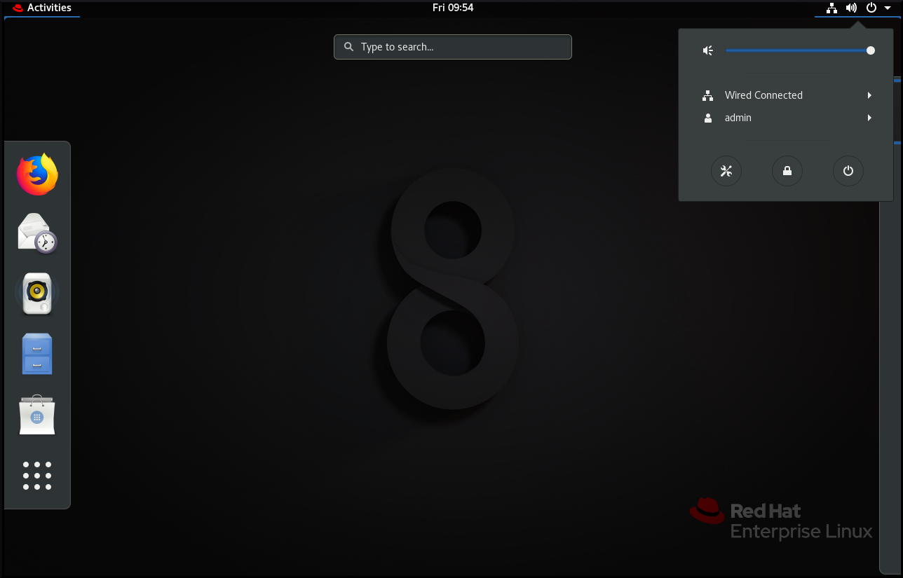
1.2.2. GNOME Classic
GNOME Classic represents a mode for users who prefer a more traditional desktop experience that is similar to GNOME 2 environment used with Red Hat Enterprise Linux 6. It is based on GNOME 3 technologies, and at the same time it includes multiple features similar to GNOME 2.
GNOME Classic user interface consists of these major components:
Applications and PlacesThe
Applicationsmenu is displayed at the top left of the screen. It gives the user access to applications organized into categories. If you enable window overview, you can also open theActivities Overviewfrom that menu.The
Placesmenu is displayed next to theApplicationsmenu on the top bar. It gives the user quick access to important folders, for exampleDownloadsorPictures.TaskbarThe
taskbaris displayed at the bottom of the screen, and features:- A window list
- A notification icon displayed next to the window list
- A short identifier for the current workspace and total number of available workspaces displayed next to the notification icon
Four available workspaces
In GNOME Classic, the number of workspaces available to the user is by default set to 4.
Minimize and maximize buttons
Window titlebars in GNOME Classic feature the minimize and maximize buttons that let the user quickly minimize the windows to the window list, or maximize them to take up all of the space on the desktop.
A traditional
Super+Tabwindow switcherIn GNOME Classic, windows in the
Super+Tabwindow switcher are not grouped by application.System menuThe
system menuis located in the top right corner, and enables you:- Updating settings
- Controlling the sound bar
- Finding information about your Wi-Fi connection
- Switching user
- Logging out
- Turning off the computer
The GNOME 3 Classic Desktop with the Rhythmbox application and the Favorites submenu of the Applications menu
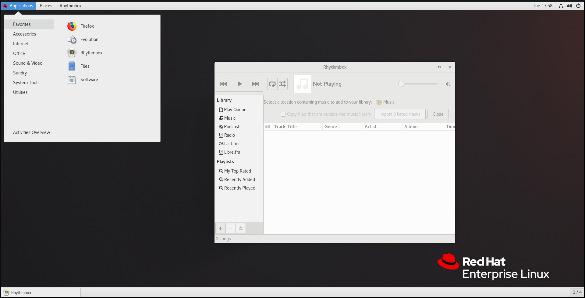
In GNOME Classic, the overview of windows that are open is not available by default. You can see the list of all open windows in the taskbar at the bottom of the screen. However, you can enable the windows overview similar to what is by default available in GNOME Standard by changing the default settings of the GNOME Classic environment as described in Section 1.2.3, “Enabling window overview in GNOME Classic”.
1.2.3. Enabling window overview in GNOME Classic
In GNOME Classic, the overview of open windows is not available by default. This procedure enables the window overview for all users on the system.
Enabling the window overview by this procedure is not a permanent change. Each update of the gnome-classic-session package overwrites the configuration file to the default settings, which disable the window overview.
To keep the window overview enabled, apply the procedure after each update of gnome-classic-session.
Procedure
-
Open the
/usr/share/gnome-shell/modes/classic.jsonfile as therootuser. Find the following line in the file:
"hasOverview": false
Change the line to the following:
"hasOverview": true
-
Save changes, and close the
/usr/share/gnome-shell/modes/classic.jsonfile. - Restart the user session.
Verification steps
- In your GNOME Classic session, open multiple windows.
- Press the Super key to open the window overview.
In the overview, check that:
- The Dash (the vertical panel on the left side of the screen) is displayed.
- The bottom panel is not displayed.
The workspace switcher is displayed on the right side of the screen.
Window overview with "hasOverview": true
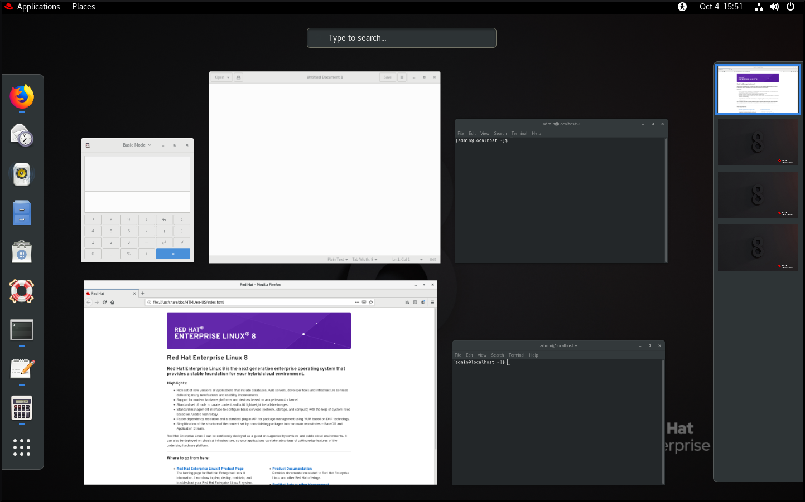
With the default settings (
"hasOverview": false), the overview has the following features:- The Dash is not displayed.
The bottom panel is displayed. It includes the Window picker button in its left part and the workspace switcher in its right part.
Window overview with "hasOverview": false
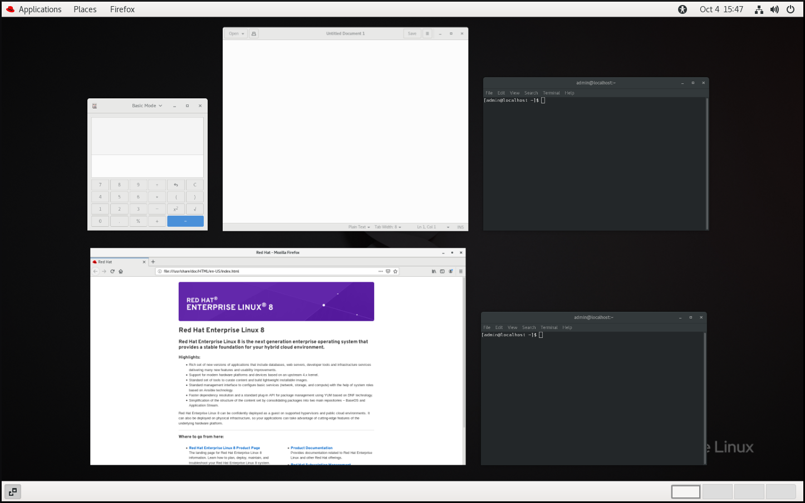
1.3. Disabling the hot corner functionality on GNOME Shell
The GNOME environment provides the hot corner functionality, which is enabled by default. This means that when you move the cursor to the area of the top left corner and press the cursor in this area, the Activities Overview menu opens automatically.
However, you may want to disable this feature to not open Activities Overview unintentionally.
To do so, you can use the following tools:
- The dconf Editor application
- The gsettings command-line utility
- The No topleft hot corner extension
The selection of the tool might depend on whether you want to disable the hot corner functionality for a single user or for all users on the system. By using dconf Editor or gsettings, you can disable hot corner only for a single user. To disable hor corner system-wide, use the No topleft hot corner extension.
1.3.1. Disabling the hot corner functionality for a single user
To disable the hot corner functionality for a single user, you can use either the dconf Editor application or the gsettings command-line utility.
1.3.1.1. Disabling hot corner using dconf Editor
To disable the hot corner functionality using the dconf Editor application, follow this procedure.
Prerequisites
The dconf Editor application is installed on the system:
# yum install dconf-editor
Procedure
- Open the dconf Editor application.
-
Choose the
org.gnome.desktop.interfacemenu. Find the
enable-hot-cornersoption.This option is by default set to
On.Default settings of enable-hot-corners
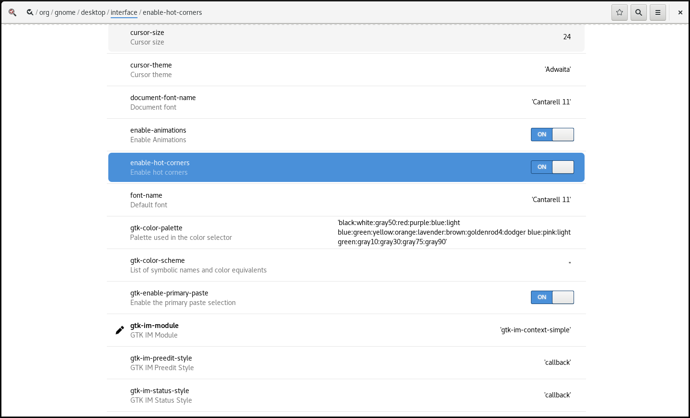
Set
enable-hot-cornerstoFalse.You can do this either by:
-
Setting
enable-hot-cornerstoOffin the same window. Clicking the line with
enable-hot-corners, and proceeding to a new window.In the new window, you can switch the hot corner feature off.
Switching the hot corner functionality off
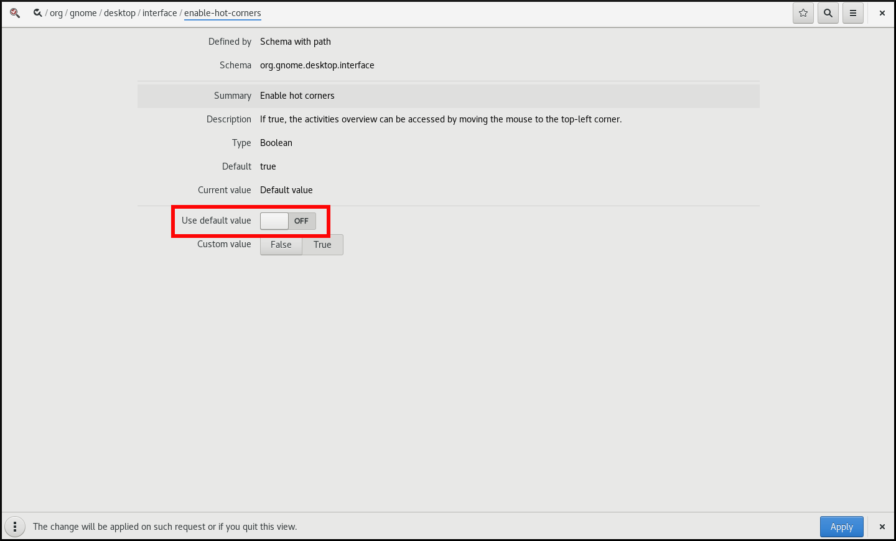
-
Setting
For more information on dconf Editor application, see Section 3.3, “Displaying GSettings values for desktop applications”.
1.3.1.2. Disabling hot corner using gsettings
To disable the hot corner functionality using the gsettings command-line utility, follow this procedure.
Procedure
Enter the following command to disable the hot corner feature:
$ gsettings set org.gnome.desktop.interface enable-hot-corners false
Verification steps
Optionally, verufy that the hot corner feature is disabled:
$ gsettings get org.gnome.desktop.interface enable-hot-corners false
1.3.2. Disabling the hot corner functionality for all users
With the GNOME Shell extension called No topleft hot corner provided by the gnome-shell-extension-no-hot-corner package, you can disable the hot corner feature system-wide.
Prerequisites
The
gnome-shell-extension-no-hot-cornerpackage is installed on the system:# yum install gnome-shell-extension-no-hot-corner
Procedure
Enable the No topleft hot corner extension by switching it on in the Tweaks tool.
For more information on how to use Tweaks, see Section 1.12, “Customizing GNOME Shell environment with the Tweaks tool”.
- Log out, and restart the user session so that the extension can take effect.
1.4. Selecting GNOME environment and display protocol
The default desktop environment for Red Hat Enterprise Linux 8 is GNOME Standard with GNOME Shell on Wayland as the display server.
However, due to Section 2.2, “Current Wayland limitations”, you may want to switch the graphics protocol stack.
You may also want to swich from GNOME Standard to GNOME Classic. See Section 1.2, “GNOME environments” for differences between these two environments.
For switching between various combinations of GNOME environment and graphics protocol stacks, use the following procedure.
Procedure
From the login screen (GDM), click the cogwheel next to the Sign In button.
NoteYou cannot access this option from the lock screen. The login screen appears when you first start Red Hat Enterprise Linux 8 or when you log out of your current session.
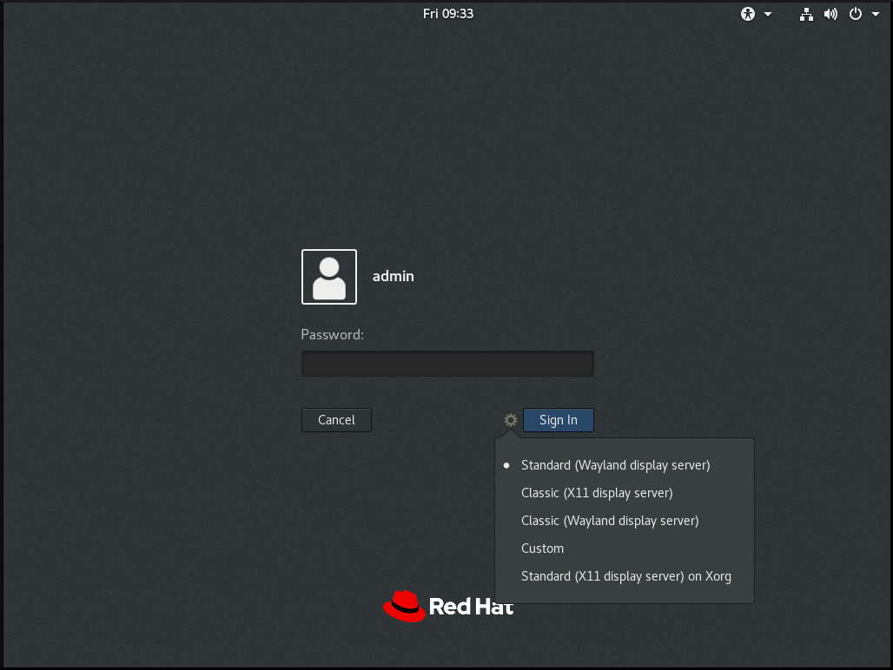
From the drop-down menu that appears, select the option that you prefer.
NoteNote that in the menu that appears on the login screen, the X.Org display server is marked as X11 display server.
The change of GNOME environment and graphics protocol stack resulting from the above procedure is persistent across user logouts, and also when powering off or rebooting the computer.
1.5. Launching applications
This section describes various approaches that you can use to launch available applications in GNOME 3.
Procedure
-
Press
Alt+F2to make theEnter a Commandscreen appear. Write the name of the executable into the
Enter a Commandscreen: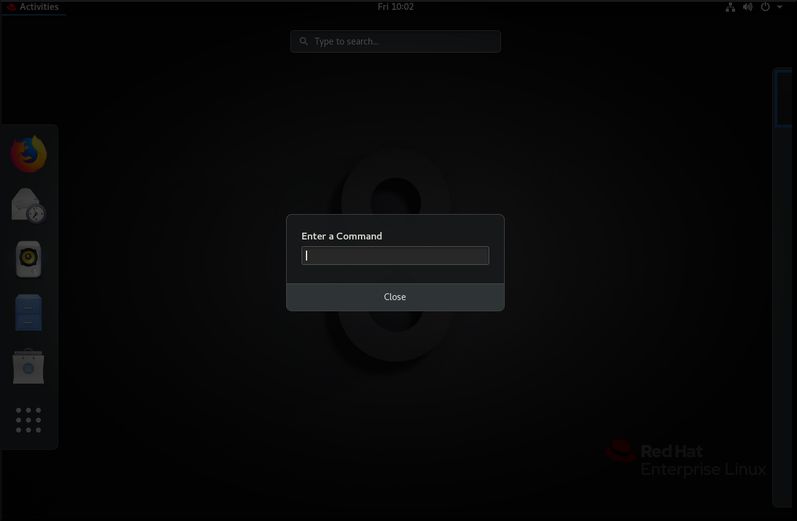
This approach works both in GNOME Standard and GNOME Classic environment.
Procedure
In GNOME Standard, go to
Activities Overviewand click on theShow Applicationsicon in the vertical bar on the left side.Note that you can choose between displaying all or just the frequent applications by using the
Frequent/Allswitch at the bottom of the screen.Alternatively, you can also start typing the name of the required application in the
search entry.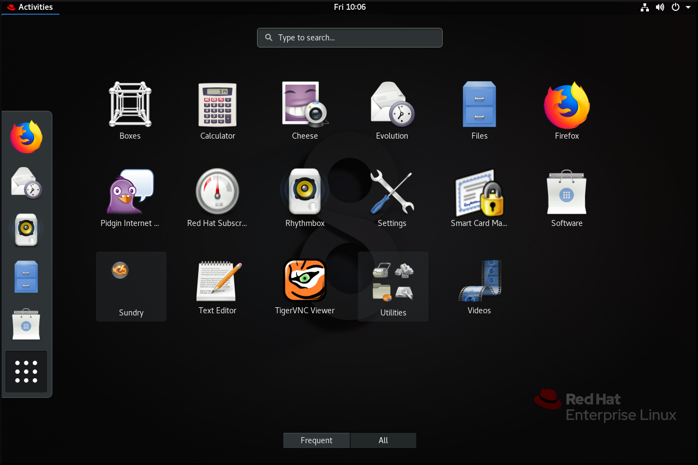
Procedure
-
In GNOME Classic, go to
Applicationsmenu. Choose the required application from one of the available categories.
The available categories include:
- Favorites
- Accessories
- Internet
- Office
- Sound & Video
- Sundry
- System Tools
- Utilities
Procedure
- Open a terminal.
- Type the name of the required application on the command line.
This approach works both in GNOME Standard and GNOME Classic environment.
1.6. Installing applications
This section describes various approaches that you can use to install a new application in GNOME 3.
Procedure
Use one of the approaches described in Launching applications to launch GNOME Software.
NoteGNOME Software is a utility, which enables you to install and update applications and gnome-shell extensions through a graphical environment. This utility is based on the PackageKit technology, which serves as its back end. GNOME Software offers mainly the desktop applications, which are the applications that include the
*.desktopfile. The available applications are grouped into multiple categories according to their purpose.Choose the application to be installed from one of the available categories.
- Audio & Video
- Communication & News
- Productivity
- Graphics & Photography
- Add-ons
- Developer Tools
Utilities
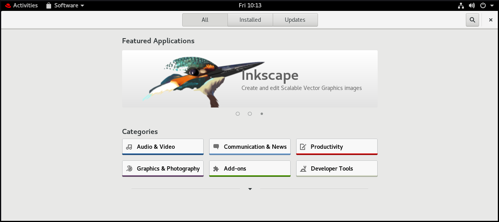
Click the selected application, and then click the Install button.
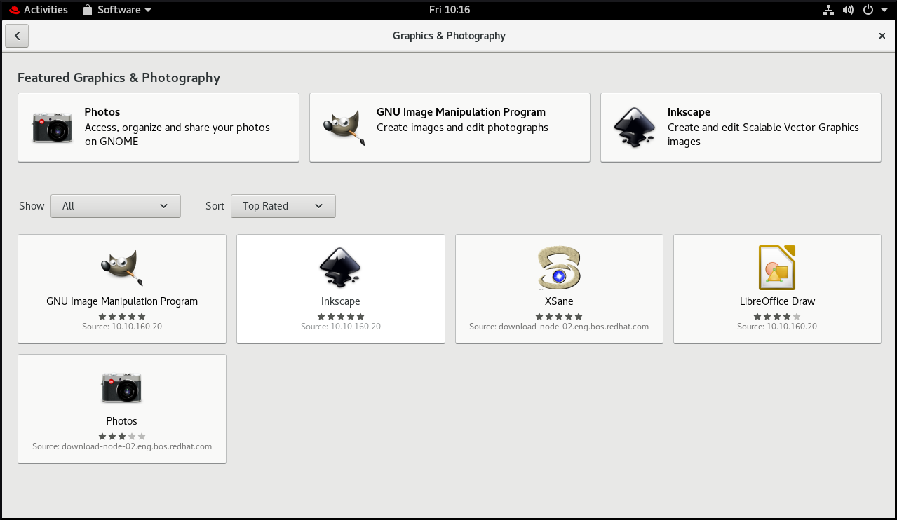
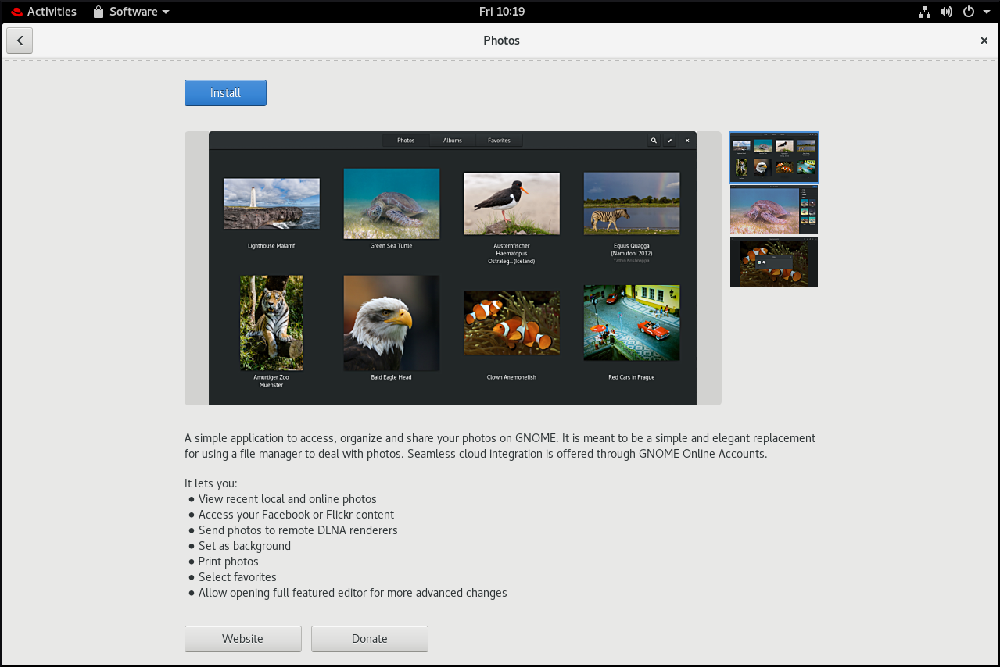
NoteAdd-ons include for example GNOME Shell extensions, codecs or fonts.
Procedure
- Start opening a file that is associated with an application or applications that are currently not installed on your system.
- GNOME will automatically identify suitable application in which the file can be opened, and will offer to download the application.
Procedure
- Download the required rpm package.
Open the directory that includes the downloaded rpm in the Nautilus file manager.
NoteThe downloads are by default stored in the
/home/user/Downloadsdirectory.- Double-click the icon of the rpm to install it.
Procedure
Start typing the name of the required application in the
search entry.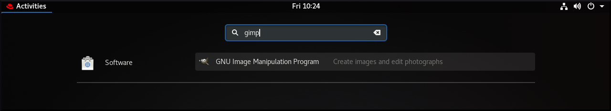
GNOME will automatically find the application in a respective repository, and will display the application’s icon.
Click the application’s icon that automatically appears to open GNOME Software.
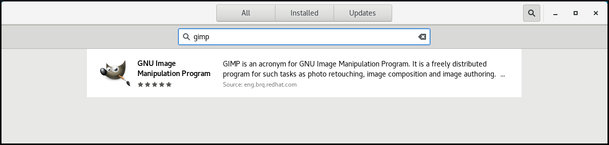
Click again the icon of the application and finish the installation in GNOME Software as described above.
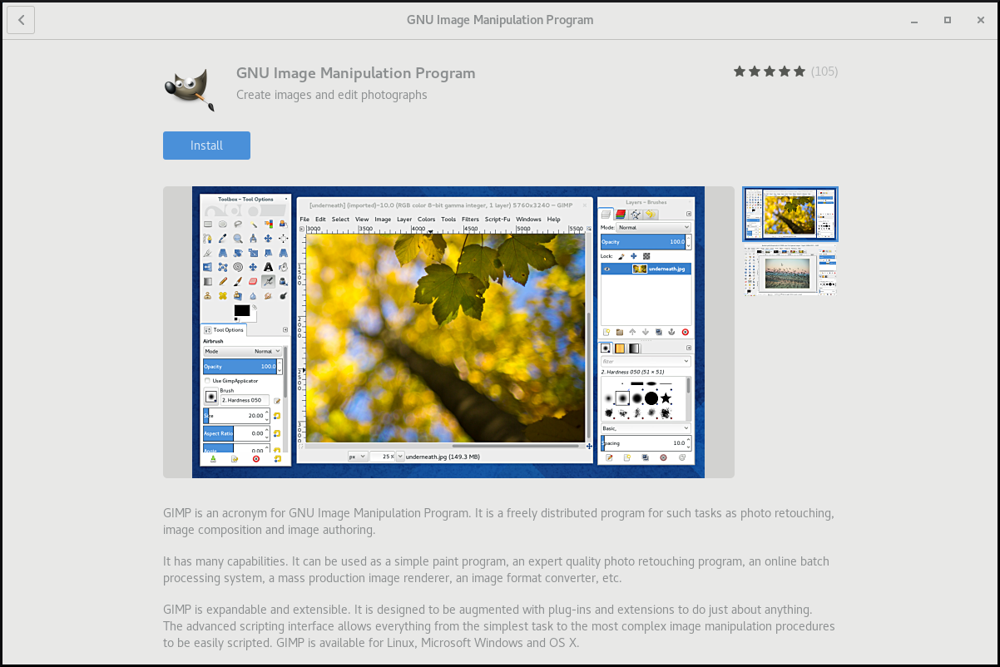
Procedure
- Open a terminal.
Run the
yum installcommand with the name of the required application:~]# yum install <application_name>
1.7. Desktop icons
In RHEL 8, the Desktop icons functionality is no longer provided by the Nautilus file manager, but by the desktop icons gnome-shell extension available in the gnome-shell-extension-desktop-icons package.
Desktop icons in GNOME Classic
The GNOME Classic environment includes the gnome-shell-extension-desktop-icons package by default. Desktop icons are always on, and cannot be turned off. If you want to create a desktop icon for a file, you just need to put this file into the /Desktop directory, and the icon appears automatically.
Desktop icons in GNOME Standard
If you have only the GNOME Standard environment available, and not GNOME Classic, you must install gnome-shell-extension-desktop-icons.
After the package has been installed, you can switch the desktop icons on or off by using the Tweaks application:
Go to Tweaks, and select
Extensions-Desktop icons, and switch it on.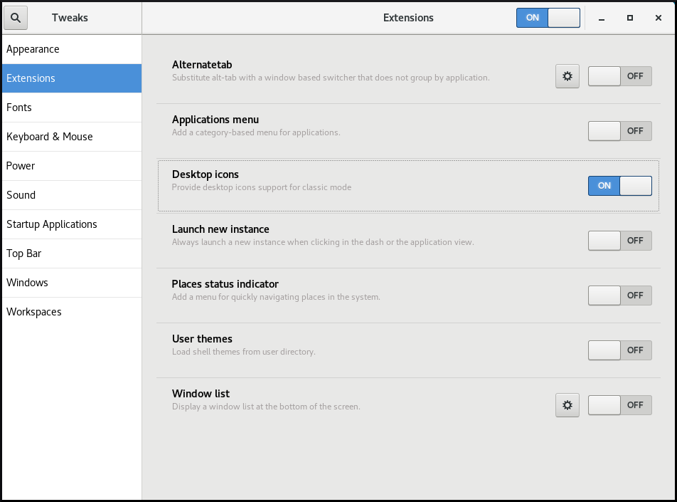
-
Put the required file into the
/Desktopdirectory, and the icon appears automatically on your desktop.
1.8. Handling sound
In Red Hat Enterprise Linux 8, sound is handled by the PulseAudio sound server that lets programs output the audio using the Pulseaudio daemon.
For more information on PulseAudio, see the pulseaudio man page.
To handle sound, you can use one of these two graphical applications in GNOME:
-
System menu -
Tweakstool -
GNOME Control Center
System menu is located in the top right corner, and it only enables you to set the intensity of the sound output or sound input through the sound bar. The sound bar for input sound is available only if you are running an application that is supposed to use an iternal microphone (built-in audio), such as some teleconference tools.
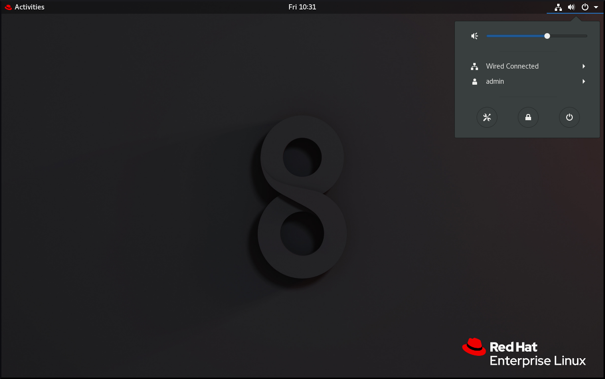
Tweaks tool only enables you to configure the Over-Amplification.
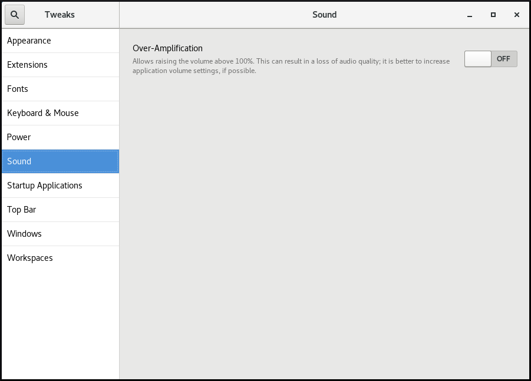
GNOME Control Center provides more options to configure sound. You can launch this tool by using one of the approaches described in Launching applications. Moreover, you can also launch it from the System menu by clicking on its icon.
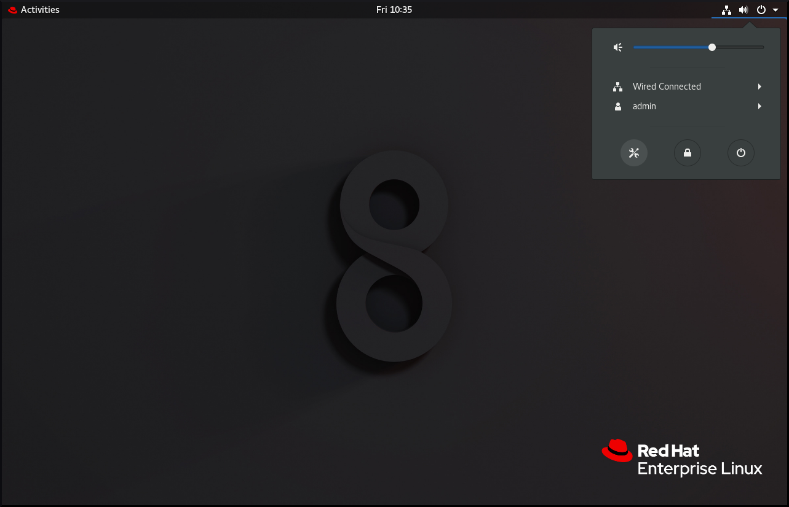
When GNOME Control Center opens, choose Sound from the left vertical bar.
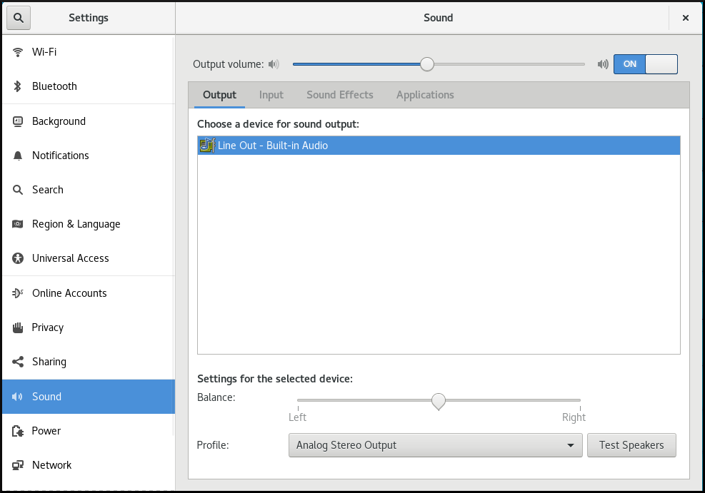
Through GNOME Control Center - Sound, you can configure the following:
-
Outputsound -
Inputsound -
Sound effects -
Applications
The Output and Input menus show only the built-in audio devices unless you connect any external device that can handle sound.
The Output menu enables you to select the required profile from available analog or digital profiles that are displayed depending on available output devices.
The Applications menu shows all currently running applications that can process sound, and allows you to amplify or lower the sound of a particular application.
1.9. Handling graphics and photos
GNOME Shell provides multiple tools to handle graphics and photography.
You can check the available tools under the Graphics & Photography menu in GNOME Software:
Open the GNOME software.
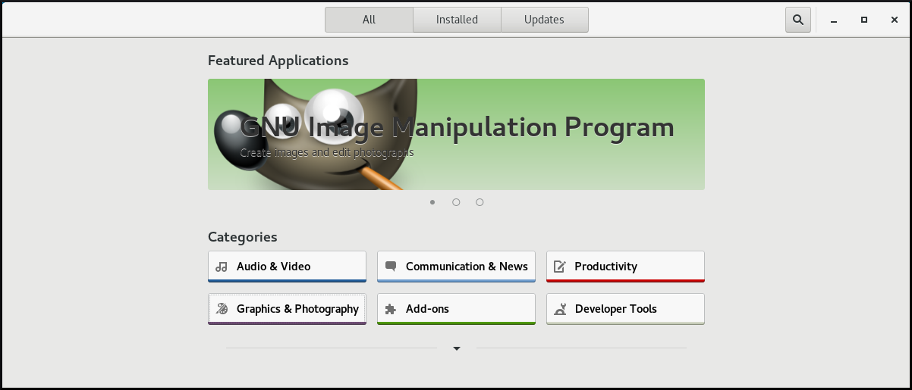
-
Go to
Graphics & Photography. 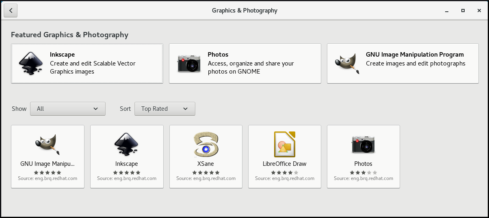
The available tools include:
PhotosFor accessing, organizisng and sharing your photos.
GNU Image Manipulation ProgramFor creating images and editing photographs.
InkspaceFor creating and editing scalable vector graphics images.
XSaneFor scanning images with a scanner.
LibreOffice DrawFor create and editing drawings, flow charts, and logos.
1.10. Handling printing
In GNOME Shell, printing can be set up using the GNOME Control center GUI.
1.10.1. Starting GNOME control center for setting up printing
Procedure
Use one of the approaches described in Section 1.5, “Launching applications” to start the GNOME Control center GUI.
Moreover, you can also start the GNOME Control center from the system menu in the top right corner by clicking on the "Settings" icon.
- When the GNOME Control center GUI appears, go to:
Devices → Printers
Figure 1.1. GNOME Control center configuration tool
1.10.2. Adding a new printer in GNOME Control center
This section describes how to add a new printer using the GNOME Control center GUI.
Prerequisites
To be able to add a new printer using the GNOME Control center GUI, you must click on Unlock, which appears on the right side of the top bar, and authenticate as one of the following users:
- Superuser
-
Any user with the administrative access provided by
sudo(users listed within/etc/sudoers) -
Any user belonging to the
printadmingroup in/etc/group
Procedure
Open the Add Printer dialog.
Select one of the available printers (including also network printers), or enter printer IP address or the hostname of a printer server.
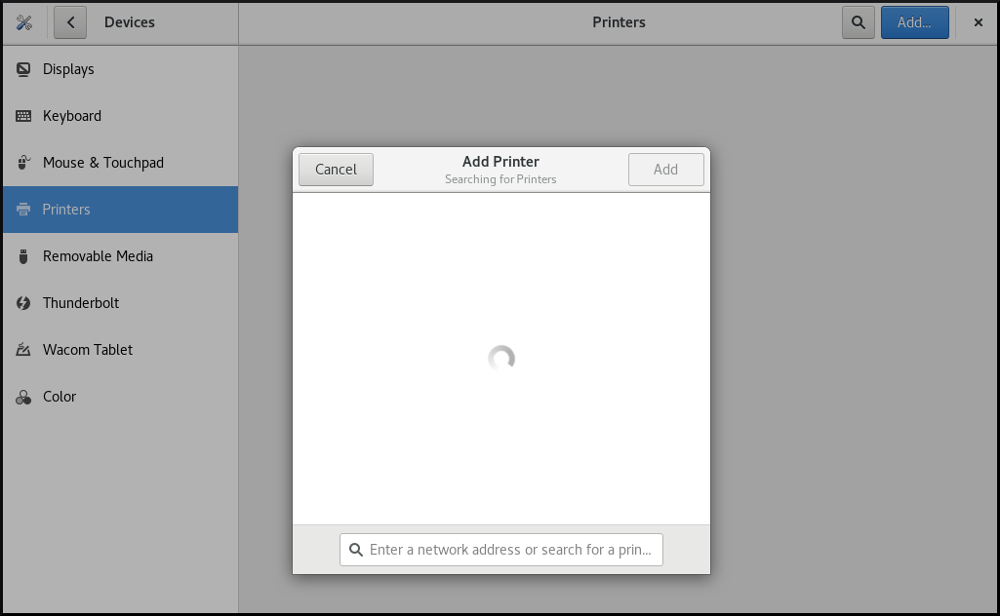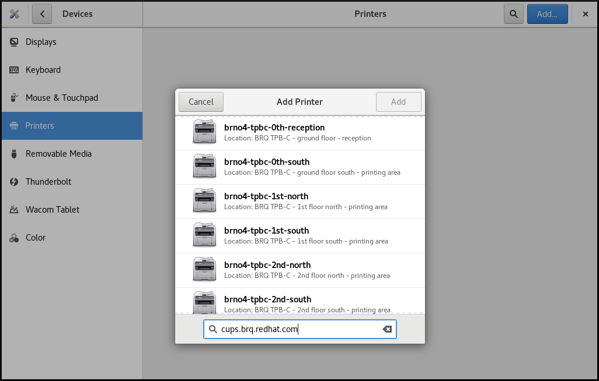
1.10.3. Configuring a printer in GNOME Control center
This section describes how to configure a new printer, and how to maintain a configuration of a printer using the GNOME Control center GUI.
Displaying printer’s settings menu
Procedure
Click the "settings" button on the right to display a settings menu for the selected printer:
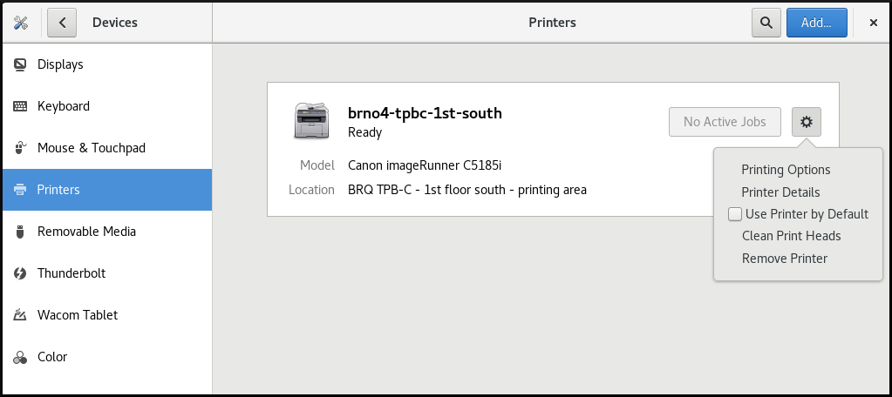
Displaying and modifying printer’s details
Procedure
Click
Printer Detailsto display and modify selected printer’s settings: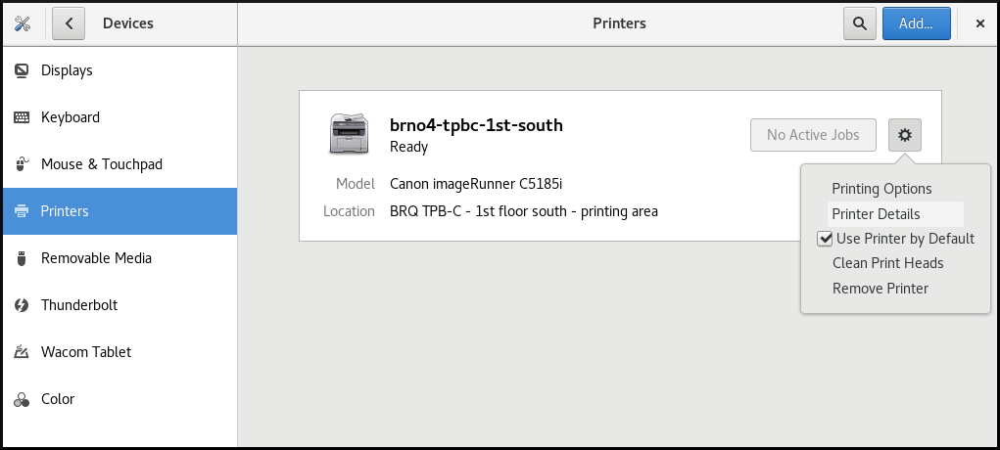
With this menu you can:
Search for DriversGNOME Control Center communicates with PackageKit that searches for a suitable driver suitable in available repositories.
Select from DatabaseThis option enables you to select a suitable driver from databases that have already been installed on the system.
Install PPD FileThis option enables you to select from a list of available postscript printer description (PPD) files that can be used as a driver for your printer.
Setting the default printer
Procedure
Click
Use Printer by Defaultto set the selected printer as the default printer: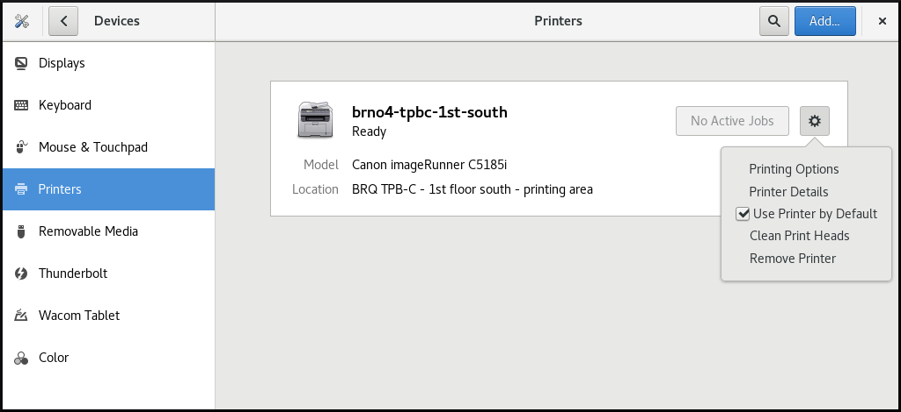
Removing a printer
Procedure
Click
Remove Printerto remove the selected printer: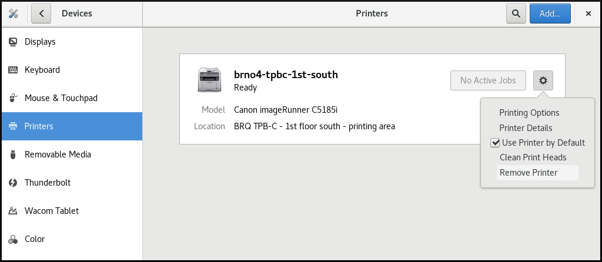
1.10.4. Printing a test page in GNOME Control Center
This section describes how to print a test page to make sure that the printer functions properly.
You might want to print a test page if one of the below prerequisites is met.
Prerequisites
- A printer has been set up.
- A printer configuration has been changed.
Procedure
Click the "settings" button on the right to display a settings menu for the selected printer:
-
Click
Printing Options→Test Page
1.10.5. Setting print options using GNOME Control center
This section describes how to set print options using the GNOME Control center GUI.
Procedure
Click the "settings" button on the right to display a settings menu for the selected printer:
-
Click
Printing Options
1.11. Sharing media between applications
Red Hat Enterprise Linux 8 includes the PipeWire media server, which ensures access to multimedia devices and media sharing between applications.
When running a remote desktop session on GNOME Shell on Wayland, PipeWire and the VNC server is used. The functionality of remote desktop session is provided by the gnome-remote-desktop and pipewire packages.
On X.Org, just VNC is needed to run a remote desktop session. This functionality on X.Org is provided by the vino package.
PipeWire is used also with teleconference tools such as BlueJeans when running on GNOME Shell on Wayland. In such case, the pipewire service is activated automatically when you start sharing your screen within the teleconference tool.
To check the status of the pipewire service, run:
~]$ systemctl --user status pipewire
1.12. Customizing GNOME Shell environment with the Tweaks tool
You can customize the GNOME Shell environment for a particular user by using the Tweaks tool.
To open Tweaks, use one of the approaches described in Section 1.5, “Launching applications”.
To choose the required item that you want to customize, use the vertical menu on the left. For example you can choose the applications to start automatically when you log in by using the Statup Applications menu, or you can customize your top bar appearance by using the Top Bar menu.
The Tweaks tool
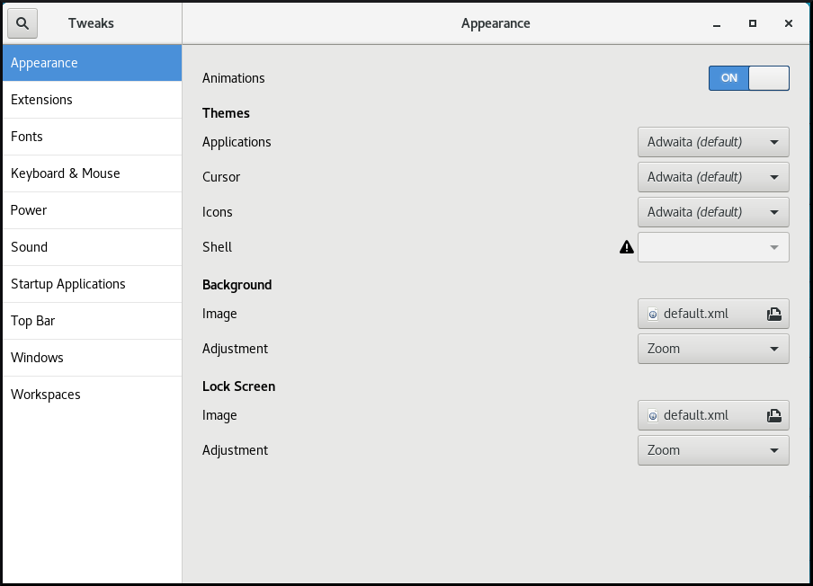
Customizing startup applications in Tweaks
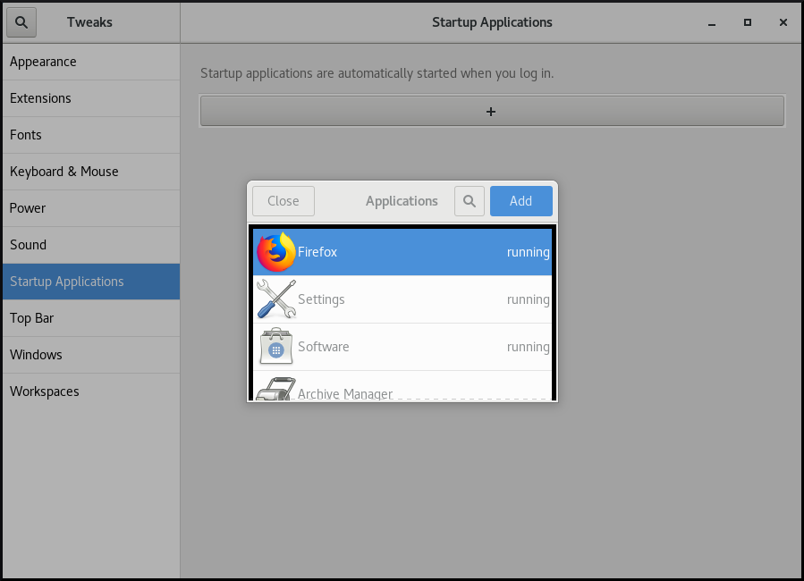
Customizing the appearance of your top bar in Tweaks
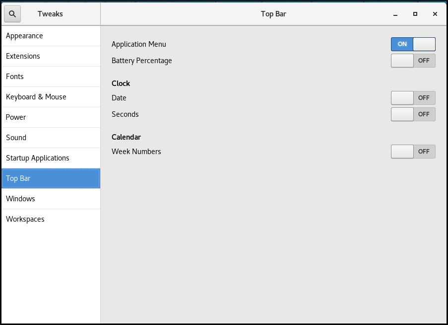
Chapter 2. Graphics stacks in RHEL 8
In Red Hat Enterprise Linux 8, you can choose between two protocols to build a graphical user interface:
- X11
- Wayland
The X11 protocol uses X.Org as the display server. Displaying graphics based on this protocol works the same way as in Red Hat Enterprise Linux 7, where this was the only option.
The Wayland protocol on Red Hat Enterprise Linux 8 uses GNOME Shell as its compositor and display server, which is further referred as GNOME Shell on Wayland. Displaying graphics based on the Wayland protocol has some differences and limitation compared to X11.
New installations of Red Hat Enterprise Linux 8 automatically select GNOME Shell on Wayland. However, you can switch to X.Org, or select the required combination of GNOME environment and display server as described in Section 1.4, “Selecting GNOME environment and display protocol”.
Note that there are also a few environments where X.Org is preferred over GNOME Shell on Wayland, such as:
- Cirrus graphics used in a VM environment
- Matrox graphics
- Aspeed graphics
- QXL graphics used in a VM environment
- Nvidia graphics when used with the proprietary driver
The Nvidia graphics by default use nouveau, which is an open source driver. nouveau is supported on Wayland, hence you can use Nvidia graphics with nouveau on GNOME Shell on Wayland without any limitations. However, using Nvidia graphics with proprietary Nvidia binary drivers is not supported on GNOME Shell on Wayland. In this case, you need to switch to X.Org as described in Section 1.4, “Selecting GNOME environment and display protocol”.
2.1. Key differences between the Wayland and X11 protocol
X11 applications
Client applications need to be ported to the Wayland protocol or use a graphical toolkit that has a Wayland backend, such as GTK, to be able to work natively with the compositor and display server based on Wayland.
Legacy X11 applications that cannot be ported to Wayland automatically use Xwayland as a proxy between the X11 legacy clients and the Wayland compositor. Xwayland functions both as an X11 server and a Wayland client. The role of Xwayland is to translate the X11 protocol into the Wayland protocol and reversely, so that X11 legacy applications can work with the display server based on Wayland.
On GNOME Shell on Wayland, Xwayland is started automatically at startup, which ensures that most X11 legacy applications work as expected when using GNOME Shell on Wayland. However, the X11 and Wayland protocols are different, and hence some clients relying on X11-specific features may behave differently under Xwayland. For such specific clients, you can switch to the X.Org display server as described in Section 1.4, “Selecting GNOME environment and display protocol”.
libinput
Red Hat Enterprise Linux 8 uses a new unified input stack, libinput, which manages all common device types, such as mice, touchpads, touchscreens, tablets, trackballs and pointing sticks. This unified stack is used both by the X.Org and by the GNOME Shell on Wayland compositor.
GNOME Shell on Wayland uses libinput directly for all devices, and no switchable driver support is available. Under X.Org, libinput is implemented as the X.Org libinput driver, and driver support is outlined below.
- Mice, touchscreens, trackballs, pointing sticks
-
Red Hat Enterprise Linux 8 uses the
X.Org libinputdriver for these devices. TheX.Org evdevdriver, which was used in Red Hat Enterprise Linux 7, is available as fallback where required. - Touchpads
-
Red Hat Enterprise Linux 8 uses the
X.Org libinputdriver for touchpads. TheX.Org synapticsdriver, which was used for touchpads in Red Hat Enterprise Linux 7, is no longer available. - Graphics tablets
-
Red Hat Enterprise Linux 8 continues using the
X.Org wacomdriver, which was used for tablet devices in Red Hat Enterprise Linux 7. However, theX.Orglibinput driver is available where required. - Other input devices
-
Red Hat Enterprise Linux 7 used the
X.Org evdevdriver for other input devices that are not included not in the above categories. Red Hat Enterprise Linux 8 uses theX.Org libinputdriver by default but can fall back to theX.Org evdevdriver if a device is incompatible withlibinput.
Gestures
GNOME Shell on Wayland supports new touchpad and touchscreen gestures. These gestures include:
- Switching workspaces by dragging up or down with four fingers.
-
Opening the
Activities Overviewby bringing three fingers closer together.
2.2. Current Wayland limitations
Nvidia drivers
Proprietary Nvidia binary drivers are not supported with GNOME Shell on Wayland. To avoid any complications while using the Nvidia GPU, GNOME Shell automatically falls back to X.Org, which means that the login screen does not provide any option based on the Wayland protocol.
The nouveau driver is still supported and is the default driver for Nvidia graphics.
Remote desktop
With GNOME Shell on Wayland, VNC support is provided by the gnome-remote-desktop package. Remote access using VNC via gnome-remote-desktop currently requires an already logged in session, and only the primary monitor is accessible. Screen sharing with GNOME Shell on Wayland is possible using the PipeWire media server. For more details on the PipeWire media server, see PipeWire project.
For more advanced VNC usage, you need to switch to X.org, where traditional VNC tools are available. For more information, see Section 1.4, “Selecting GNOME environment and display protocol” .
X Display Manager
The X Display Manager Control Protocol (XDMCP) is not supported with GNOME Shell on Wayland.
Hence, it is not possible to use the X display manager to start a session on the X.Org display server from the same or another computer.
Additional limitations
The following additional limitations related to the Wayland protocol should be noted:
- X.Org screen manipulation utilities are not available.
-
The
xrandrutility is not supported because Wayland handles layout, rotations, and resolutions differently. - GNOME Shell cannot be restarted using the Alt+F2 r shortcut.
- Due to stability issues, using X.org instead of Wayland is recommended in virtual environments.
-
Wayland does not support the custom or niche input devices that cannot be handled by the
libinputdriver.
2.3. Additional resources
-
You can find the current list of environments for which Wayland is not available in the
/usr/lib/udev/rules.d/61-gdm.rulesfile. - For additional information on the Wayland project, see Wayland documentation.
Chapter 3. Configuring GNOME at low level
3.1. Introduction to configuring GNOME
To be able to configure the GNOME Desktop Environment, you need to understand these basic terms:
- dconf
- GSettings
- gsettings
dconf has two different meanings.
Firstly, dconf is a key-based Binary Large Object (BLOB) database for storing GNOME configurations. dconf manages user settings such as GDM, application, and proxy settings, and serves as the back end for GSettings.
Secondly, dconf is a command-line utility which is used for reading and writing individual values or entire directories from and to a dconf database.
GSettings is a high-level API for application settings which serves as the front end for dconf.
gsettings is a command-line tool which is used to view and change user settings.
3.2. Managing user and system GNOME settings
dconf allows system administrators and users several levels of control over GNOME configuration:
- Administrators can define default settings that apply to all users.
- Users can override the defaults with their own settings.
- Administrators can also lock settings to prevent users from overriding them.
3.3. Displaying GSettings values for desktop applications
Viewing and editing of the GSettings values can be achieved with one of the following tools:
- dconf-editor GUI tool
- gsettings command-line utility
The dconf-editor application and gsettings utility have the following in common:
- allow browsing and changing options for system and application preferences
- allow to change preferences
- can be run by regular users, because both tools are intended to browse and modify the current user’s GSettings database
The dconf-editor provides a GUI for browsing the settings and their editing. It presents the hierarchy of settings in a tree-view and also displays additional information about each setting, including the description, type and default value.
The gsettings utility can be used to display and set dconf values. gsettings utility supports Bash completion for commands and settings. This tools also allows you to automate configuration in shell scripts.
Figure 3.1. dconf-editor showing org.gnome.destop.background GSettings keys
Prerequisites
The dconf-editor is not installed on the system by default. To install it, run the following command as the
rootuser:~]# yum install dconf-editor
Procedure
- To list GSettings values in the GUI, open the dconf-editor application.
To list a specific GSettings value on the command line, use the following command:
$ gsettings get schema key
For example:
$ gsettings get org.gnome.desktop.background picture-uri
Additional resources
-
For more information on the dconf-editor tool, see the
dconf-editor(1)man page and the dconf-editor Project documentation. -
For more information on the gsettings utility, see the
gsettings(1)man page.
3.4. Using dconf profiles
The dcoonf system stores configuration in several different databases. You can configure dconf profiles, which specify the databases that dconf uses.
3.4.1. Introduction to dconf profiles
A dconf profile is a list of system’s hardware and software configuration databases, which the dconf system collects.
The dconf profiles allow you to compare identical systems to troubleshoot hardware or software problems.
The dconf system stores its profiles in the text files which can be located either within the /etc/dconf/profile/ directory or elsewhere. The $DCONF_PROFILE environment variable can specify a relative path to the file from /etc/dconf/profile/, or an absolute path, such as in a user’s home directory.
Note that key pairs which are set in a dconf profile override the default settings.
3.4.2. Selecting a dconf profile
On startup, dconf consults the $DCONF_PROFILE environment to find the name of the dconf profile to open. The result depends on whether the variable is set or not:
- If set, dconf attempts to open the profile named in the variable and aborts if this step fails.
-
If not set, dconf attempts to open the profile named
userand uses an internal hard-wired configuration if this step fails.
Each line in a dconf profile specifies one dconf database.
The first line indicates the database used to write changes. The remaining lines show read-only databases.
The following is a sample profile stored in /etc/dconf/profile/user:
user-db:user system-db:local system-db:site
In this example, the dconf profile specifies three databases. user is the name of the user database which can be found in ~/.config/dconf, and local and site are system databases, located in /etc/dconf/db/.
To apply a new dconf user profile to the user’s session, you need to log out and log in, because the dconf profile for a session is determined at login.
As a user or application developer, do not manipulate dconf directly. To manipulate dconf, always use the dconf-editor or the gsettings utility. The only exception to use dconf directly is when setting system-wide default configurations, because the aforementioned tools do not allow to manipulate such configurations.
3.5. Configuring custom default values
Machine-wide default settings can be set by providing a default for a key in a dconf profile. These defaults can be overridden by the user.
Prerequisites
- the user profile exists
- the value for the key was added to a dconf database
Procedure
For example, to set the default background:
Create the user profile in
/etc/dconf/profile/user:user-db:user system-db:local
where
localis the name of a dconf database.Create a keyfile for the local database in
/etc/dconf/db/local.d/01-background, which contains the following default settings:~]# dconf path [org/gnome/desktop/background] # GSettings key names and their corresponding values picture-uri='file:///usr/local/share/backgrounds/wallpaper.jpg' picture-options='scaled' primary-color='000000' secondary-color='FFFFFF'
In the default setting of the keyfile, the following GSettings keys are used:
Table 3.1. org.gnome.desktop.background schemas GSettings Keys
Key Name Possible Values Description picture-options
"none", "wallpaper", "centered", "scaled", "stretched", "zoom", "spanned"
Determines how the image set by wallpaper_filename is rendered.
picture-uri
filename with the path
URI to use for the background image. Note that the backend only supports local
file://URIs.primary-color
default: 000000
Left or Top color when drawing gradients, or the solid color.
secondary-color
default: FFFFFF
Right or Bottom color when drawing gradients, not used for solid color.
Edit the keyfile according to your preferences.
For more information, see Section 3.3, “Displaying GSettings values for desktop applications”.
Update the system databases:
~]# dconf update
When the user profile is created or changed, the user needs to log out and log in again before the changes will be applied.
Additional resources
-
If you want to avoid creating a user profile, you can use the dconf command-line utility to read and write individual values or entire directories from and to a dconf database. For more information, see the
dconf(1)man page.
3.6. Locking down specific settings
By using the lockdown mode in dconf, you can prevent users from changing specific settings.
Without enforcing the system settings using a lockdown, any settings that users make take precedence over the system settings. User can thus override the system settings with their own.
Procedure
To lock down a GSettings key:
-
Create a locks subdirectory in the keyfile directory such as
/etc/dconf/db/local.d/locks/. - Add any number of files with keys that you want to lock into this directory.
Example 3.1. Locking the settings for the default wallpaper
- Set a default wallpaper.
-
Create a new
/etc/dconf/db/local.d/locks/directory. Create a new file in
/etc/dconf/db/local.d/locks/00-default-wallpaperwith the following contents, listing one key per line:# Prevent users from changing values for the following keys: /org/gnome/desktop/background/picture-uri /org/gnome/desktop/background/picture-options /org/gnome/desktop/background/primary-color /org/gnome/desktop/background/secondary-color
Update the system databases:
~]# dconf update
3.7. Storing user settings over NFS
For dconf to work correctly when using Network File System (NFS) home directories, the dconf keyfile back end must be used.
Note that dconf keyfile back end only works properly if the glib2-fam package is installed. Without this package, notifications on configuration changes made on remote machines are not displayed properly.
With Red Hat Enterprise Linux 8, glib2-fam is available in the BaseOs repository.
To set the dconf keyfile back end:
Ensure that the
glib2-fampackage is installed on the system.To verify whether the package is installed on the system:
~]# yum list installed
If
glib2-famis not in the list of installed packages, install it by running:~]# yum install glib2-fam
-
Create or edit the
/etc/dconf/profile/userfile on every client. At the very beginning of
/etc/dconf/profile/user file, add the following line:service-db:keyfile/user
The dconf keyfile back end takes effect the next time that the user logs in. It polls the keyfile to determine whether updates have been made, so settings may not be updated immediately.
3.8. Setting GSettings keys properties
This section describes how to set GSettings keys properties for a single-logged user.
Each GSettings key can have only one value in a dconf database. Setting the same key to a different value at a different place of the dconf database overrides the previous value.
Values of some keys are of array type. For array type, you can specify the value of the key as a list of multiple elements separated by a comma.
To set a GSettings key of array type, follow this syntax:
key=['option1', 'option2']
The following example shows setting of the org.gnome.desktop.input-sources.xkb-options GSettings key whose value is of array type:
Example settings of the org.gnome.desktop.input-sources.xkb-options GSettings Key
[org/gnome/desktop/input-sources] # Enable Ctrl-Alt-Backspace for all users # Set the Right Alt key as the Compose key and enable it xkb-options=['terminate:ctrl_alt_bksp', 'compose:ralt']
3.9. Working with GSettings keys on command line
This section focuses on using of the gsettings command to configure, manipulate and manage the GSettings keys. The most frequent use cases that can be resolved by using the gsettings command are shown.
3.9.1. Setting key value
To set a value of a key:
gsettings set SCHEMA [:PATH] KEY
Note that the value is specified as a serialised GVariant.
Example 3.2. Adding selected applications into the favorite applications key
To add selected applications among your favorite applications:
$ gsettings set org.gnome.shell favorite-apps "['firefox.desktop', 'evolution.desktop', 'rhythmbox.desktop', 'shotwell.desktop', 'org.gnome.Nautilus.desktop', 'org.gnome.Software.desktop', 'yelp.desktop', 'org.gnome.Terminal.desktop', 'org.gnome.clocks.desktop']"
If the operation succeeds, no return code is shown. As a result, all listed applications are added to favorite applications. The change is valid immediately.
3.9.2. Monitoring key changes
To monitor a key for changes and print values that changed:
gsettings monitor SCHEMA [:PATH] [KEY]
Note that if the KEY argument is not specified, all keys in the schema are monitored. Monitoring continues until the process is terminated.
Example 3.3. Monitoring changes of the favorite applications key
To monitor the changes of the favorite applications key, open two terminals and run:
In the first terminal:
$ gsettings monitor org.gnome.shell favorite-apps
In the second terminal:
$ gsettings set org.gnome.shell favorite-apps "['firefox.desktop', 'evolution.desktop', 'rhythmbox.desktop', 'shotwell.desktop', 'org.gnome.Nautilus.desktop', 'org.gnome.Software.desktop', 'yelp.desktop', 'org.gnome.Terminal.desktop']"
As a result, a notification whether and how favorite applications changed is displayed in the first terminal:
favorite-apps: ['firefox.desktop', 'evolution.desktop', 'rhythmbox.desktop', 'shotwell.desktop', 'org.gnome.Nautilus.desktop', 'org.gnome.Software.desktop', 'yelp.desktop', 'org.gnome.Terminal.desktop']
3.9.3. Checking whether key is writable
To check whether a key is writable:
gsettings writable SCHEMA [:PATH] KEY
Example 3.4. Checking whether the favorite applications key is writable
To check whether the favorite applications key is writable:
$ gsettings writable org.gnome.shell favorite-apps
As a result, the return code shows True.
3.9.4. Checking key valid values
To check the range of valid values for a key:
gsettings range SCHEMA [:PATH] KEY
Example 3.5. Checking the range of valid values for the remember-mount-password key
To check valid values for the remember-mount-password key:
$ gsettings range org.gnome.shell remember-mount-password
As a result, the return code displays type of the key value, which is type b in this particular case. For more information, see GNOME developer.
3.9.5. Checking description of valid key values
To check the description of valid values for a key:
gsettings describe SCHEMA [:PATH] KEY
Example 3.6. Checking the description of valid values for the picture-uri key
To check the description of valid values for the picture-uri key:
$ gsettings describe org.gnome.desktop.screensaver picture-uri
As a result, the following output is displayed:
URI to use for the background image. Note that the backend only supports local file:// URIs.3.9.6. Querying key value
To get the value of a key:
gsettings get SCHEMA [:PATH] KEY VALUE
Note that the value is displayed as a serialised GVariant.
Example 3.7. Querying value of the remember-mount-password key
To get value of the remember-mount-password key:
$ gsettings get org.gnome.shell remember-mount-password
As a result, the return code displays false.
3.9.7. Resetting key value
To reset the value of a key:
gsettings reset SCHEMA [:PATH] KEY
If resetting succeeds, no return code is displayed. Default values are in stored dconf and gsettings-desktop-schemas files.
Example 3.8. Resetting the lock-delay key to its default value
The default value of the lock-delay key is 0, and it is stored in the /usr/share/glib-2.0/schemas/org.gnome.desktop.screensaver.gschema.xml file.
Users can set the value of lock-delay as needed.
For example, to set the lock-delay key for screensaver to 200:
$ gsettings set org.gnome.desktop.screensaver lock-delay 200
To reset the lock-delay key for screensaver to its default value:
$ gsettings reset org.gnome.desktop.screensaver lock-delay
As a result, the value of lock-delay value is set to 0.
3.9.8. Resetting schema
To reset a schema:
gsettings reset-recursively SCHEMA [:PATH]
Example 3.9. Resetting the org.gnome.desktop.screensaver schema to its defaults
To reset the org.gnome.desktop.screensaver schema to its defaults:
$ gsettings reset-recursively org.gnome.desktop.screensaver
As a result, the lock-delay value is reset to 0, and other keys within the org.gnome.desktop.screensaver schema that were changed by user are reset to their defaults as well.
3.9.9. Listing installed non-relocatable schemas
To list installed schemas that are non-relocatable:
gsettings list-schemas [--print-paths]
If the [--print-paths] argument is specified , the path where each schema is mapped is printed as well.
Example 3.10. Listing installed non-relocatable schemas
To list all schemas installed on your system that are non-relocatable:
$ gsettings list-schemas
As a result, a full list of schemas is returned. The following list is truncated.
org.gnome.rhythmbox.library org.gnome.shell.overrides org.gnome.system.proxy.https org.gnome.clocks org.gnome.eog.fullscreen org.gnome.login-screen org.gnome.eog.view
3.9.10. Listing schema keys
To list the keys that are in the selected schema:
gsettings list-keys SCHEMA [:PATH]
Example 3.11. Listing keys in the org.gnome.shell schema
To list keys in the org.gnome.shell schema:
$ gsettings list-keys org.gnome.shell
As a result, a list of keys is returned. The following list is truncated.
enabled-extensions command-history remember-mount-password always-show-log-out had-bluetooth-devices-setup looking-glass-history disable-user-extensions app-picker-view disable-extension-version-validation development-tools favorite-apps
3.9.11. Listing schema children
To list children of a selected schema:
gsettings list-children SCHEMA [:PATH]
Note that the list is empty if there are no children.
Example 3.12. Listing children of the org.gnome.shell schema
To list children of the org.gnome.shell schema:
$ gsettings list-children org.gnome.shell
As a result, the following output is returned:
keyboard org.gnome.shell.keyboard keybindings org.gnome.shell.keybindings
3.9.12. Listing schema’s keys and values
To list keys and values of a selected schema recursively:
gsettings list-recursively [SCHEMA [:PATH]]
Note that if the schema whose keys you want to list is not specified, all keys within all schemas are listed.
Example 3.13. Listing keys and values recursively
To list keys and values in all schemas recursively:
$ gsettings list-recursively
As a result, all key and values in all schemas on system are listed, as shown below. Note that the following list is truncated.
org.gnome.nautilus.desktop network-icon-visible false org.gnome.nautilus.desktop font '' org.gnome.nautilus.desktop network-icon-name 'Network Servers' org.gnome.nautilus.desktop home-icon-name 'Home' org.gnome.nautilus.desktop volumes-visible true org.gnome.Vinagre always-enable-listening false org.gnome.Vinagre always-show-tabs false org.gnome.Vinagre show-accels false org.gnome.Vinagre history-size 15 org.gnome.Vinagre shared-flag true
3.10. Acknowledgements
Certain portions of this text first appeared in the GNOME Desktop System Administration Guide. Copyright © 2014 The GNOME Project, Michael Hill, Jim Campbell, Jeremy Bicha, Ekaterina Gerasimova, minnie_eg, Aruna Sankaranarayanan, Sindhu S, Shobha Tyagi, Shaun McCance, David King, and others. Licensed under a Creative Commons Attribution-ShareAlike 3.0 Unported License.
The editors of this Red Hat Enterprise Linux 8 documentation would like to thank the GNOME community members for their valuable contributions to the GNOME Desktop System Administration Guide.
Chapter 4. Configuring file associations
This section provides information on configuring RHEL to open or access files with different formats.
In GNOME, MIME (Multipurpose Internet Mail Extension) types help to identify the format of a file and applications to use to open these files.
4.1. Multipurpose Internet Mail Extension types
The GNOME desktop uses MIME types to:
- Determine which application should open a specific file format by default.
- Register other applications that can open files of a specific format.
- Set a string describing the type of a file, for example, in a file properties dialog of the files application.
- Set an icon representing a specific file format, for example, in a file properties dialog of the files application.
MIME type names follow a given format:
media-type/subtype-identifier
For example, image/jpeg.
Here image is a media type and jpeg is the subtype identifier.
GNOME follows Multipurpose Internet Mail Extension (MIME) info specification from the Freedesktop.org to determine:
- The machine-wide and user-specific location to store all the MIME type specification files.
- How to register a MIME type so that the desktop environment knows which application you can use to open a specific file format.
- How users can change which applications should open with what file formats.
MIME database
The MIME database is a collection of all the MIME type specification files that GNOME uses to store information about known MIME types.
The most important part of the MIME database from the system administrator’s point of view is the /usr/share/mime/packages/ directory, where the MIME type-related files specifying information on known MIME types are stored. One example of such a file is /usr/share/mime/packages/freedesktop.org.xml, specifying information about the standard MIME types available on the system, by default. The shared-mime-info package provides this file.
Additional resources
- For detailed information describing the MIME type system, see Shared MIME Info specifications on the Freedesktop website.
4.2. Adding a custom MIME type for all users
You must create a new MIME type specification file in the /usr/share/mime/packages/ directory and a .desktop file in the /usr/share/applications/ directory to add a custom MIME type for all the users on the system and register a default application for that MIME type.
Procedure
Create the
/usr/share/mime/packages/application-x-newtype.xmlfile with following content:<?xml version="1.0" encoding="UTF-8"?> <mime-info xmlns="http://www.freedesktop.org/standards/shared-mime-info"> <mime-type type="application/x-newtype"> <comment>new mime type</comment> <glob pattern="*.xyz"/> </mime-type> </mime-info>The sample application-x-newtype.xml file here defines a new MIME type application/x-newtype and assigns file names with the .xyz extension to that MIME type.
Create a new
.desktopfile named, for example,myapplication1.desktopin the/usr/share/applications/with following content:[Desktop Entry] Type=Application MimeType=application/x-newtype Name=My Application 1 Exec=myapplication1
The sample
myapplication1.desktopfile here associates theapplication/x-newtypeMIME type with an application namedMy Application 1. It is run by a commandmyapplication1.As a root user, update the MIME database for your changes to take effect.
# update-mime-database /usr/share/mime
As a root user, update the application database.
# update-desktop-database /usr/share/applications
Verification steps
To verify that you have successfully associated
*.xyzfiles with theapplication/x-newtypeMIME type, first create an empty file, for example test.xyz and execute the following commands:$ touch test.xyz $ gvfs-info test.xyz | grep "standard::content-type" standard::content-type: application/x-newtype
To verify
myapplication1.desktopis correctly set as the default registered application for theapplication/x-newtypeMIME type, execute following command:$ gio mime --query application/x-newtype Default application for 'application/x-newtype': myapplication1.desktop Registered applications: myapplication1.desktop Recommended applications: myapplication1.desktop
4.3. Adding a custom MIME type for individual users
You must create a new MIME type specification file in the ~/.local/share/mime/packages/ directory and a .desktop file in the ~/.local/share/applications/ directory to add a custom MIME type for individual users and register a default application for that MIME type.
Procedure
Create the
~/.local/share/mime/packages/application-x-newtype.xmlfile with following content:<?xml version="1.0" encoding="UTF-8"?> <mime-info xmlns="http://www.freedesktop.org/standards/shared-mime-info"> <mime-type type="application/x-newtype"> <comment>new mime type</comment> <glob pattern="*.xyz"/> </mime-type> </mime-info>The sample
application-x-newtype.xmlfile here defines a new MIME typeapplication/x-newtypeand assigns file names with the.xyzextension to that MIME type.Create a new .desktop file named, for example,
myapplication1.desktop, and place it in the~/.local/share/applications/directory with following content:[Desktop Entry] Type=Application MimeType=application/x-newtype Name=My Application 1 Exec=myapplication1
The sample
myapplication1.desktopfile above associates theapplication/x-newtypeMIME type with an application named My Application 1. It is run by a commandmyapplication1.Update the MIME database for your changes to take effect:
$ update-mime-database ~/.local/share/mime
Update the application database:
$ update-desktop-database ~/.local/share/applications
Verification steps
To verify that you have successfully associated
*.xyzfiles with theapplication/x-newtypeMIME type, first create an empty file, for example, test.xyz and execute the following commands:$ touch test.xyz $ gvfs-info test.xyz | grep "standard::content-type" standard::content-type: application/x-newtype
To verify that
myapplication1.desktopis correctly set as the default registered application for theapplication/x-newtypeMIME type, execute following command:$ gio mime --query application/x-newtype Default application for 'application/x-newtype': myapplication1.desktop Registered applications: myapplication1.desktop Recommended applications: myapplication1.desktop
4.4. Options to override default MIME types
By default, the package-installed /usr/share/applications/mimeapps.list and /usr/share/applications/gnome-mimeapps.list files specify which application is registered to open specific MIME types.
System administrators can create the /etc/xdg/mimeapps.list or /etc/xdg/gnome-mimeapps.list file with a list of MIME types they want to override with the default registered application.
Local users can create the ~/.local/share/applications/mimeapps.list or ~/.local/share/applications/gnome-mimeapps.list file with a list of MIME types for which they want to override the default registered application.
Configurations are applied in the following order:
-
/usr/share/applications/ -
/etc/xdg/ -
~/.local/share/application/
Within a particular location, the configurations are applied in the following order:
- mimeapps.list
- gnome-mimeapps.list
4.5. Overriding default registered application for all the users
As a system administer, you can update the configuration based on the requirements. System administrator’s configuration takes precedence over default package configuration. Within each, the desktop-specific configuration takes precedence over the configuration that does not specify the desktop environment.
Procedure
Consult the
/usr/share/applications/mimeapps.listfile to determine the MIME types for which you want to change the default registered application. For example, the following sample of themimeapps.listfile specifies the default registered application for thetext/htmlandapplication/xhtml+xmlMIME types:[Default Applications] text/html=firefox.desktop application/xhtml+xml=firefox.desktop
This example above specifies default application (Firefox) by specifying its corresponding
.desktopfile (firefox.desktop). You can find.desktopfiles for other applications in the/usr/share/applications/directory.Create the
/etc/xdg/mimeapps.listfile and specify the MIME types and their corresponding default registered applications in this file.[Default Applications] text/html=myapplication1.desktop application/xhtml+xml=myapplication2.desktop
This example above sets the default registered application for the
text/htmlMIME type tomyapplication1.desktopandapplication/xhtml+xmlMIME type tomyapplication2.desktop.
Verification steps
-
For these settings to function correctly, ensure that both the
myapplication1.desktopandmyapplication2.desktopfiles are placed in the/usr/share/applications/directory. Execute the
gio mime querycommand to verify that the default registered application is set correctly.$ gio mime text/html Default application for 'text/html': myapplication1.desktop Registered applications: myapplication1.desktop firefox.desktop Recommended applications: myapplication1.desktop firefox.desktop
4.6. Overriding default registered application for individual users
Individual users can also update the configuration based on the requirements. This configuration takes precedence over the system administrator’s configuration and the system administrator’s configuration takes precedence over the package configuration. Within each, the desktop-specific configuration takes precedence over the configuration that does not specify the desktop environment.
Procedure
Consult the
/usr/share/applications/mimeapps.listfile to determine the MIME types for which you want to change the default registered application. For example, the following sample of themimeapps.listfile specifies the default registered application for thetext/htmlandapplication/xhtml+xmlMIME types:[Default Applications] text/html=firefox.desktop application/xhtml+xml=firefox.desktop
This example above specifies default application (Firefox) by specifying its corresponding
.desktopfile (firefox.desktop). You can find.desktopfiles for other applications in the/usr/share/applications/directory.Create the
~/.local/share/applications/mimeapps.listfile and specify the MIME types and their corresponding default registered applications in this file.[Default Applications] text/html=myapplication1.desktop application/xhtml+xml=myapplication2.desktop
This example above sets the default registered application for the
text/htmlMIME type tomyapplication1.desktopandapplication/xhtml+xmlMIME type tomyapplication2.desktop.
Verification steps
-
For these settings to function correctly, ensure that both the
myapplication1.desktopandmyapplication2.desktopfiles are placed in the/usr/share/applications/directory. Execute the
gio mime querycommand to verify that the default registered application is set correctly.$ gio mime text/html Default application for 'text/html': myapplication1.desktop Registered applications: myapplication1.desktop firefox.desktop Recommended applications: myapplication1.desktop firefox.desktop
Chapter 5. Customizing desktop appearance
This section explains how system administrators can customize appearance of the desktop environment for different users of the system.
5.1. Customizing desktop backgrounds
As a system administrator, you can configure the default desktop background, add extra backgrounds, or add multiple backgrounds using the dconf utility.
If the users of the system are not permitted to change background from the defaults, system administrator needs to lock the settings using the locks directory. Otherwise, each user can customize the background according to their preferences.
5.1.1. Customizing the default desktop background
You can configure the default desktop background and its appearance by setting the relevant GSettings keys in the org.gnome.desktop.background schema.
For more information about GSettings, see Section 3.1, “Introduction to configuring GNOME”.
Use the following procedure to set the default background:
Procedure
Create a local database for machine-wide settings in
/etc/dconf/db/local.d/00-background:# Specify the dconf path [org/gnome/desktop/background] # Specify the path to the desktop background image file picture-uri='file:///usr/local/share/backgrounds/wallpaper.jpg' # Specify one of the rendering options for the background image: # 'none', 'wallpaper', 'centered', 'scaled', 'stretched', 'zoom', 'spanned' picture-options='scaled' # Specify the left or top color when drawing gradients or the solid color primary-color='000000' # Specify the right or bottom color when drawing gradients secondary-color='FFFFFF'
Optionally, if you want an user to not be able to change the default background, override the user’s setting in the
/etc/dconf/db/local.d/locks/backgroundfile:# List the keys used to configure the desktop background /org/gnome/desktop/background/picture-uri /org/gnome/desktop/background/picture-options /org/gnome/desktop/background/primary-color /org/gnome/desktop/background/secondary-color
Update the system databases:
# dconf update
- Users must log out and back in again before the system-wide settings take effect.
5.1.2. Adding extra backgrounds
You can make extra backgrounds available to users on your system.
Procedure
Use the
org.gnome.desktop.backgroundschemas to create a file in thexmlformat specifying your extra background’s appearance.Table 5.1. Frequently used org.gnome.desktop.background schemas GSettings Keys
Key Name Possible Values Description picture-options
"none", "wallpaper", "centered", "scaled", "stretched", "zoom", "spanned"
Determines how the image set by wallpaper_filename is rendered.
color-shading-type
"horizontal", "vertical", and "solid"
Determines shade the background color.
primary-color
default: #023c88
Left or Top color when drawing gradients, or the solid color.
secondary-color
default: #5789ca
Right or Bottom color when drawing gradients, not used for solid color.
The full range of options can be found in the dconf-editor GUI or the gsettings command-line utility. For more information, see Section 3.3, “Displaying GSettings values for desktop applications”.
-
Store the *.xml file under the
/usr/share/gnome-background-properties/directory.
When an user clicks their name in the top right corner, chooses Settings, and in the Personal section of the table selects Background, they will see the new background available.
Example implementation of org.gnome.desktop.background GSettings keys
An example extra backgrounds file with one <wallpaper> element
<?xml version="1.0" encoding="UTF-8"?>
<!DOCTYPE wallpapers SYSTEM "gnome-wp-list.dtd">
<wallpapers>
<wallpaper deleted="false">
<name>Company Background</name>
<name xml:lang="de">Firmenhintergrund</name>
<filename>/usr/local/share/backgrounds/company-wallpaper.jpg</filename>
<options>zoom</options>
<shade_type>solid</shade_type>
<pcolor>#ffffff</pcolor>
<scolor>#000000</scolor>
</wallpaper>
</wallpapers>
In one configuration file, you can specify multiple <wallpaper> elements to add more backgrounds as shown in the following example with two <wallpaper> elements, adding two different backgrounds.
An example extra backgrounds file with two <wallpaper> elements
<?xml version="1.0" encoding="UTF-8"?>
<!DOCTYPE wallpapers SYSTEM "gnome-wp-list.dtd">
<wallpapers>
<wallpaper deleted="false">
<name>Company Background</name>
<name xml:lang="de">Firmenhintergrund</name>
<filename>/usr/local/share/backgrounds/company-wallpaper.jpg</filename>
<options>zoom</options>
<shade_type>solid</shade_type>
<pcolor>#ffffff</pcolor>
<scolor>#000000</scolor>
</wallpaper>
<wallpaper deleted="false">
<name>Company Background 2</name>
<name xml:lang="de">Firmenhintergrund 2</name>
<filename>/usr/local/share/backgrounds/company-wallpaper-2.jpg</filename>
<options>zoom</options>
<shade_type>solid</shade_type>
<pcolor>#ff0000</pcolor>
<scolor>#00ffff</scolor>
</wallpaper>
</wallpapers>
5.1.3. Setting the screen shield
Screen shield is the screen that quickly slides down when the system is locked. It is controlled by the org.gnome.desktop.screensaver.picture-uri GSettings key. GDM uses its own dconf profile, so you can set the default background by changing the settings in that profile.
For more information on GSettings and dconf, see Section 3.1, “Introduction to configuring GNOME”.
Procedure
Create a gdm database for machine-wide settings in
/etc/dconf/db/gdm.d/01-screensaver:[org/gnome/desktop/screensaver] picture-uri='file:///opt/corp/background.jpg'
Replace
/opt/corp/background.jpgwith the path to the image file you want to use as the screen shield. Supported formats are PNG, JPG, JPEG, and TGA. Note that the image will be scaled if necessary to fit the screen.Update the system databases:
# dconf update
- Users must log out and back in again before the system-wide settings take effect.
Troubleshooting
If the screen shield does not update, you can:
-
Make sure that you have updated the system databases by running the
dconf updatecommand as therootuser. - Try restarting GDM.
5.2. Using GNOME Shell extensions to customize desktop environment
GNOME Shell extensions allow for the customization of the default GNOME Shell interface and its parts, such as window management and application launching.
Before deploying third-party GNOME Shell extensions on Red Hat Enterprise Linux, make sure to read the following document to learn about the Red Hat support policy for third-party software:How does Red Hat Global Support Services handle third-party software, drivers, and/or uncertified hardware/hypervisors?
5.2.1. Overview of GNOME Shell extensions
This section provides an overview of GNOME Shell extensions available on RHEL 8, including the name of the package providing a particular extension, and the description of what each extension does.
Table 5.2. Overview of available GNOME Shell extensions
| Package name | Extension name | Description |
|---|---|---|
| gnome-shell-extension-apps-menu | apps-menu |
|
| gnome-shell-extension-top-icons | Top Icons | Show legacy icons on top |
| gnome-shell-extension-user-theme | user-theme | Support for custom themes in GNOME Shell |
| gnome-shell-extension-drive-menu | drive-menu | Drive status menu for GNOME Shell |
| gnome-shell-extension-window-list | window-list | Display a window list at the bottom of the screen in GNOME Shell |
| gnome-shell-extension-dash-to-dock | Dash to Dock | Dock for the Gnome Shell by micxgx.gmail.com |
| gnome-shell-extension-desktop-icons | Desktop Icons | Desktop icons support for the GNOME Classic experience |
| gnome-shell-extension-no-hot-corner | nohotcorner | Disable the hot corner in GNOME Shell |
| gnome-shell-extension-systemMonitor | systemMonitor |
|
| gnome-shell-extension-updates-dialog | Updates Dialog | Show a modal dialog when there are software updates |
| gnome-shell-extension-window-grouper | window-grouper | Keep windows that belong to the same process on the same workspace |
| gnome-shell-extension-panel-favorites | panel-favorites | Favorite launchers in GNOME Shell’s top bar |
| gnome-shell-extension-windowsNavigator | windowNavigator | Support for keyboard selection of windows and workspaces in GNOME shell |
| gnome-shell-extension-auto-move-windows | Autom Move Windows | Assign specific workspaces to applications in GNOME Shell |
| gnome-shell-extension-launch-new-instance | launch-new-instance | Always launch a new application instance for GNOME Shell |
| gnome-shell-extension-workspace-indicator | workspace-indicator | Workspace indicator for GNOME Shell |
| gnome-shell-extension-disable-screenshield | Disable Screen Shield | Disable GNOME Shell screen shield if lock is disabled |
| gnome-shell-extension-native-window-placement | native-window-placement | Native window placement for GNOME Shell |
| gnome-shell-extension-screenshot-window-sizer | screenshot-window-sizer | Screenshot window sizer for GNOME Shell |
| gnome-shell-extension-horizontal-workspaces | horizontal-workspaces | Desktop icons support for the GNOME Classic experience |
| gnome-shell-extension-places-menu | places-menu |
|
| gnome-classic-session | – | GNOME Classic mode session |
5.2.2. Enabling machine-wide extensions
Prerequisites
To make extensions available to all users on the system, install them in the /usr/share/gnome-shell/extensions directory.
Procedure
Create a local database file for machine-wide settings in
/etc/dconf/db/local.d/00-extensions:[org/gnome/shell] # List all extensions that you want to have enabled for all users enabled-extensions=['myextension1@myname.example.com', 'myextension2@myname.example.com']
The
enabled-extensionskey specifies the enabled extensions using the extensions' uuid (myextension1@myname.example.comandmyextension2@myname.example.com).Update the system databases:
# dconf update
Users must log out and back in again before the system-wide settings take effect.
NoteThere is currently no way to enable additional extensions for users who have already logged in. This does not apply for existing users who have installed and enabled their own GNOME extensions.
5.2.3. Locking down enabled extensions
You can prevent the user from enabling or disabling extensions by locking down the org.gnome.shell.enabled-extensions key.
Procedure
Create a local database file for machine-wide settings in
/etc/dconf/db/local.d/00-extensions:[org/gnome/shell] # List all extensions that you want to have enabled for all users enabled-extensions=['myextension1@myname.example.com', 'myextension2@myname.example.com']
The
enabled-extensionskey specifies the enabled extensions using the extensions' uuid (myextension1@myname.example.comandmyextension2@myname.example.com).Override the user’s setting and prevent the user from changing it in
/etc/dconf/db/local.d/locks/extensions:# Lock the list of mandatory extensions /org/gnome/shell/enabled-extensions
Update the system databases:
# dconf update
- Users must log out and back in again before the system-wide settings take effect.
After locking down the org.gnome.shell.enabled-extensions, any extensions installed in ~/.local/share/gnome-shell/extensions or /usr/share/gnome-shell/extensions that are not listed in the org.gnome.shell.enabled-extensions key will not be loaded by GNOME Shell, thus preventing the user from using them.
5.2.4. Setting up mandatory extensions
In GNOME Shell, you can provide a set of extensions that the user has to use.
Prerequisites
The extensions must be installed under the /usr/share/gnome-shell/extensions directory.
Procedure
Create a local database file for machine-wide settings in
/etc/dconf/db/local.d/00-extensions-mandatory:[org/gnome/shell] # List all mandatory extensions enabled-extensions=['myextension1@myname.example.com', 'myextension2@myname.example.com']
The
enabled-extensionskey specifies the enabled extensions using the extensions' uuid (myextension1@myname.example.comandmyextension2@myname.example.com).Override the user’s setting and prevent the user from changing it in
/etc/dconf/db/local.d/locks/extensions-mandatory:# Lock the list of mandatory extensions /org/gnome/shell/enabled-extensions
Update the system databases:
# dconf update
- Users must log out and back in again before the system-wide settings take effect.
Chapter 6. Customizing GNOME desktop features
6.1. Changing the language using desktop GUI
This section describes how to change the system language using desktop GUI.
Prerequisites
- Proper language packages are installed on your system
Procedure
Open
GNOME Control CenterFor more information on how to launch this tool, see approaches described in Launching applications
Note, that you can also launch
GNOME Control Centerfrom theSystem menuby clicking on its icon.
-
In
GNOME Control Center, chooseRegion & Languagefrom the left vertical bar Click the Language menu
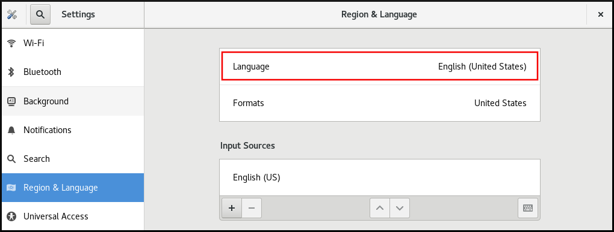
Select the required region and language from the menu
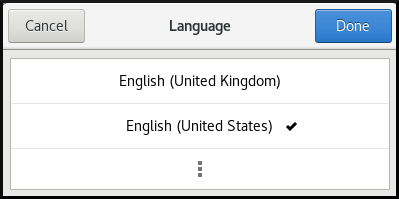
If your region and language are not listed, scroll down, and click More to select from available regions and languages.
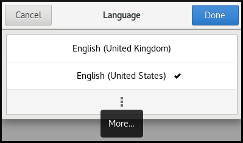
- Click Done
Click Restart for changes to take effect
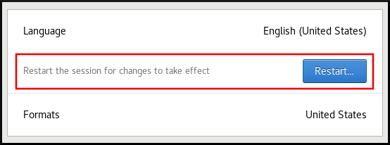
Some applications do not support certain languages. The text of an application that cannot be translated into the selected language remains in US English.
6.2. Enabling the CTRL+ALT+BACKSPACE shortcut
The Ctrl+Alt+Backspace shortcut key combination is used for terminating the X.Org display server.
You might want to terminate X.Org especially when:
- A program caused X.Org to stop working.
- You need to switch from your logged-in session quickly.
- You have launched a program that failed.
- You cannot operate in the current session.
- Your screen freezes.
To enable the Ctrl+Alt+Backspace shortcut to forcibly terminate X.Org by default for all users, you need to set the org.gnome.desktop.input-sources.xkb-options GSettings key.
Procedure
Create a local database for machine-wide settings in
/etc/dconf/db/local.d/00-input-sources:[org/gnome/desktop/input-sources] # Enable Ctrl-Alt-Backspace for all users xkb-options=['terminate:ctrl_alt_bksp']
Override the user’s setting, and prevent the user from changing it in
/etc/dconf/db/local.d/locks/input-sources:# Lock the list of enabled XKB options /org/gnome/desktop/input-sources/xkb-options
Update the system databases for the changes to take effect:
# dconf update
- Users must log out and back in again before the system-wide settings take effect.
If the Ctrl+Alt+Backspace key combination is enabled, all users can terminate X.Org , which brings them back to the login prompt.
6.3. Disabling command-line access
To disable command-line access for a desktop user, you need to make configuration changes in a number of different contexts:
- Section 6.3.1, “Setting the org.gnome.desktop.lockdown.disable-command-line Key”
- Section 6.3.2, “Disabling virtual terminal switching on X.Org”
-
Remove Terminal and any other application that provides access to the terminal from the
Applications menuandActivities Overviewin GNOME Shell. This is done by removing menu items for those applications.
The following steps do not remove the desktop user’s permissions to access a command line, but rather remove the ways that the desktop user could access command line.
6.3.1. Setting the org.gnome.desktop.lockdown.disable-command-line Key
This approach prevents the user from:
- Accessing the terminal
-
Specifying a command line to be executed by using the
Alt+F2command prompt
Procedure
Create a local database for machine-wide settings in
/etc/dconf/db/local.d/00-lockdown:[org/gnome/desktop/lockdown] # Disable command-line access disable-command-line=true
Override the user’s setting and prevent the user from changing it in
/etc/dconf/db/local.d/locks/lockdown:# Lock the disabled command-line access /org/gnome/desktop/lockdown
Update the system databases:
# dconf update
- Users must log out and back in again before the system-wide settings take effect.
6.3.2. Disabling virtual terminal switching on X.Org
With the X.Org display server, users can normally use the Ctrl+Alt+function key shortcuts to switch from the GNOME Desktop and X.Org to a virtual terminal. You can disable access to all virtual terminals by modifying the X.Org configuration. The X.Org configuration should be modified by adding the DontVTSwitch option to the Serverflags section of an X configuration file in the /etc/X11/xorg.conf.d/ directory, as shown by the following procedure.
You cannot apply the procedure if GNOME Shell on Wayland is used as the display server.
Procedure
Create or edit an X configuration file in the
/etc/X11/xorg.conf.d/directory:NoteBy convention, these host-specific configuration file names start with two digits and a hyphen and always have the
.confextension. Thus, the following file name can be/etc/X11/xorg.conf.d/10-xorg.conf.Section "Serverflags" Option "DontVTSwitch" "yes" EndSection
- Restart the X.Org display server for the changes to take effect.
6.4. Preventing the computer from suspending when closing the lid
When closing the lid of your laptop, the computer by default suspends in order to save power. You can prevent the computer from suspending when closing the lid by changing the setting for that behavior.
Some laptops can overheat if they are left running with the lid closed, especially if they are in a confined place. Therefore, consider whether changing the default setting from suspend to an other option is beneficial in your case.
Procedure
-
Open the
/etc/systemd/logind.conffile for editing. Find the
HandleLidSwitch=suspendline in the file.If it is quoted out with the
#character at the start, unquote it by removing#.If the line is not present in the file, add it.
Replace the default
suspendparameter with:-
lockfor the screen to lock -
ignorefor nothing to happen powerofffor the computer to switch offFor example:
[Login] HandleLidSwitch=lock
-
- Save your changes, and close the editor.
Run the following command so that your changes preserve the next restart of the system:
# systemctl restart systemd-logind.service
Restarting the service forcibly interrupts any currently running GNOME session of any desktop user who is logged in. This can result in users losing unsaved data.
For more information on the /etc/systemd/logind.conf file, see the logind.conf man page.
6.5. Changing behavior when pressing the power button in graphical target mode
When the machine is booted to a graphical login screen or user session, hitting the power button makes the machine suspend by default. This happens both in cases when the user presses the power button physically or when pressing a virtual power button from a remote console. To achieve a different behavior when pressing the power button, set the function of this button with dconf.
For example, if you want the system to shutdown after pressing the power button, use the following procedure:
Procedure
Create a local database for system-wide settings in the
/etc/dconf/db/local.d/01-powerfile:[org/gnome/settings-daemon/plugins/power] power-button-action='interactive'
Override the user’s setting, and prevent the user from changing it in the
/etc/dconf/db/local.d/locks/01-powerfile:/org/gnome/settings-daemon/plugins/power/power-button-action
Update the system databases:
# dconf update
- Log out and back in again before the system-wide settings take effect.
This configuration initiates a system shutdown after pressing the power button. To configure the system differently, you can set the behavior of particular buttons.
Options for particular buttons:
nothing
does nothing
suspend
suspends the system
hibernate
hibernates the system
interactive
shows a pop-up query asking the user what to do
With interactive mode, the system powers off automatically after 60 seconds when hitting the power button. However, you can choose a different behavior from the pop-up query as shown in the figure below.
Pop-up query for interactive mode
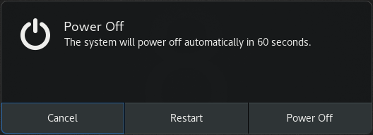
Chapter 7. Customizing Default Favorite Applications
You can customize frequently used applications as your favorite applications. You can see these favorite applications on the GNOME Shell dash in the Activities overview. You can use dconf to set the favorite applications for an individual user or for all users.
7.1. Setting different favorite applications for individual users
You can set the default favorite applications for individual users. You can add applications into your favorite list easily using any of the methods mentioned below.
- Open the Activities overview and click Activities at the top left of the screen.
- Click the grid button to find the application you want and right-click the application icon and select Add to Favorites.
- Click-and-drag the icon into the dash.
Run the following command to view all the applications that exists in the favorite list:
dconf read /org/gnome/shell/favorite-apps
If you want to lock down the above settings to prevent users from changing them. See Chapter 9, Locking down selected tasks for more information.
7.2. Setting the same favorite applications for all users
You can modify system database files using dconf keyfiles to set the same favorites for all users. The following steps edit the dconf profile and then create a keyfile to set default favorite applications for all users in the local configuration database.
Procedure
Create the key file
/etc/dconf/db/local.d/00-favorite-appsto provide information for the local database./etc/dconf/db/local.d/00-favorite-appscontents:# Snippet sets gedit, terminal and nautilus as default favorites for all users [org/gnome/shell] favorite-apps = ['gedit.desktop', 'gnome-terminal.desktop', 'nautilus.desktop']
To prevent users from overriding these settings, create the file
/etc/dconf/db/local.d/locks/favorite-appswith the following content:# Lock default favorite applications /org/gnome/shell/favorite-apps
-
Run the
dconf updatecommand to incorporate your changes into the system databases. - Logout and login again for system-wide changes to take effect.
Chapter 8. Authenticating the user in the desktop environment
You can perform the following operations:
- Configure enterprise login options in GNOME,
- Enable smart card authentication, and
- Enable fingerprint authentication.
8.1. Using enterprise credentials to authenticate in GNOME
You can use your enterprise domain credentials to access your system. This section explains how to log in using enterprise credentials in GNOME, configure enterprise credentials at the GNOME welcome screen, and add an authenticated user with enterprise credentials in GNOME.
8.1.1. Logging in with Enterprise Credentials in GNOME
You can use your domain credentials to login to GNOME if your network has an Active Directory or Identity Management domain available, and you have a domain account.
Prerequisites
System is configured to use enterprise domain accounts
For more information, see Joining the RHEL 8 system to the IdM domain using the web console
Procedure
While logging in, enter the domain user name followed by an @ sign, and then your domain name.
For example, if your domain name is example.com and the user name is User, enter:
User@example.com
NoteIf the machine is already configured for domain accounts, you should see a helpful hint describing the login format.
8.1.2. Configuring enterprise credentials at the GNOME welcome screen
Perform the following steps to configure workstation for enterprise credentials using the welcome screen that belongs to the GNOME Initial Setup program.
The initial setup runs only when you create a new user and log into that account for the first time.
Procedure
- At the login welcome screen, choose Use Enterprise Login.
- Enter your domain name into the Domain field.
- Enter your domain account user name and password.
- Click Next.
- Depending on the domain configuration, a pop up prompts for the domain administrator’s credentials.
8.1.3. Adding an authenticated user with enterprise credentials in GNOME
This procedure helps to create a new user through the GNOME Settings application. The user is authenticated using enterprise credentials.
Prerequisites
- Configured enterprise credentials at the GNOME welcome screen. For more information, see Section 8.1.2, “Configuring enterprise credentials at the GNOME welcome screen”.
Procedure
- Open the Settings window clicking icons in the top right corner of the screen.
- From the list of items, select Details > Users.
- Click Unlock and enter the administrator’s password.
- Click Add user…
- Click Enterprise Login.
- Fill out the Domain, Username, and Password fields for your enterprise account.
- Click Add.
- Depending on the domain configuration, a pop up prompts for the domain administrator’s credentials.
8.1.4. Troubleshooting enterprise login in GNOME
You can use the realm utility and its various sub-commands to troubleshoot the enterprise login configuration.
Procedure
To see whether the machine is configured for enterprise logins, run the following command:
$ realm list
Network administrators can configure and pre-join workstations to the relevant domains using the kickstart realm join command, or running realm join in an automated fashion from a script.
Additional resources
-
The
realmman page.
8.2. Enabling smart card authentication
You can enable workstations to authenticate using smart cards. In order to do so, you must configure GDM to allow prompting for smart cards and configure operating system to log in using a smart card.
You can use two ways to configure the GDM to allow prompting for smart card authentication with GUI or using the command line.
8.2.1. Configuring smart card authentication in GDM using the GUI
You can enable smart card authentication using dconf editor GUI. The dconf Editor application helps to update the configuration-related values on a dconf database.
Prerequisites
Install the dconf-editor package:
# yum install dconf-editor
Procedure
-
Open the dconf-Editor application and navigate to
/org/gnome/login-screen. - Turn on the enable-password-authentication option.
- Turn on the enable-smartcard-authentication option.
Additional resources
-
The
dconf-editorman page. -
The
dconfman page.
8.2.2. Configuring smart card authentication in GDM using the command line
You can use the dconf command-line utility to enable the GDM login screen to recognize smart card authentication.
Procedure
Create a keyfile for the GDM database in /
etc/dconf/db/gdm.d/login-screen, which contains the following content:[org/gnome/login-screen] enable-password-authentication='false' enable-smartcard-authentication='true'
Update the system
dconfdatabases:# dconf update
Additional resources
-
The
dconfman page.
8.2.3. Enabling the smart card authentication method in the system
For smart card authentication you can use the system-config-authentication tool to configure the system to allow you to use smart cards. Thus, you can avail GDM as a valid authentication method for the graphical environment. The tool is provided by the authconfig-gtk package.
Prerequisites
-
Install
authconfig-gtkpackage - Configure GDM for smart card authentication
Additional resources
- For details about configuring system to allow smart card authentication and the system-config-authentication tool, see Configuring smart cards using authselect
8.3. Fingerprint authentication
You can use the system-config-authentication tool to enable fingerprint authentication to allow users to login using their enrolled fingerprints. The tool is provided by the authconfig-gtk package.
Additional resources
-
For more information about fingerprint authentication and the
system-config-authenticationtool, see the Configuring user authentication using authselect.
Chapter 9. Locking down selected tasks
This section describes how to lock down for users the following tasks:
- Printing
- File saving on disk
- Repartitioning
- User logout and user switching
9.1. Locking down printing
You can disable the print dialog from being shown to users. This can be useful if you are giving temporary access to a user or you do not want the user to print to network printers.
The feature only works in applications which support it. Not all GNOME and third party applications have this feature enabled. The changes do not have effect on applications which do not support this feature.
To provent applications from printing, lock down the org.gnome.desktop.lockdown.disable-printing key:
Procedure
Create the user profile in
/etc/dconf/profile/userunless it already exists:user-db:user system-db:local
Create a local database for machine-wide settings in the
etc/dconf/db/local.d/00-lockdownfile:[org/gnome/desktop/lockdown] # Prevent applications from printing disable-printing=true
Override the user’s setting and prevent the user from changing it in the
/etc/dconf/db/local.d/locks/lockdownfile:# List the keys used to configure lockdown /org/gnome/desktop/lockdown/disable-printing
Update the system databases:
# dconf update
Having followed these steps, applications supporting this lockdown key, such as Evolution, Evince, or Gedit, will disable printing.
9.2. Locking file saving on disk
You can disable the Save and Save As dialogs. This can be useful if you are giving temporary access to a user or you do not want the user to save files to the computer.
The feature only works in applications which support it. Not all GNOME and third party applications have this feature enabled. The changes will have no effect on applications which do not support this feature.
To prevent applications from file saving, lock down the org.gnome.desktop.lockdown.disable-save-to-disk key:
Procedure
Create the user profile in
/etc/dconf/profile/userunless it already exists:user-db:user system-db:local
Create a local database for machine-wide settings in the
/etc/dconf/db/local.d/00-lockdownfile:[org/gnome/desktop/lockdown] # Prevent the user from saving files on disk disable-save-to-disk=true
Override the user’s setting and prevent the user from changing it in the
/etc/dconf/db/local.d/locks/lockdownfile:# Lock this key to disable saving files on disk /org/gnome/desktop/lockdown/disable-save-to-disk
Update the system databases:
# dconf update
Having followed these steps, applications supporting this lockdown key, for example Videos, Image Viewer, Evolution, Document Viewer, or GNOME Shell, will disable their Save As dialogs.
9.3. Locking repartitioning
polkit enables you to set permissions for individual operations. For udisks2, the utility for disk management services, the configuration is located at /usr/share/polkit-1/actions/org.freedesktop.udisks2.policy. This file contains a set of actions and default values, which can be overridden by system administrator.
polkit configuration stored in /etc overrides the configuration shipped by packages in /usr/share/.
Procedure
Create a file with the same content as in
/usr/share/polkit-1/actions/org.freedesktop.udisks2.policy:cp /usr/share/polkit-1/actions/org.freedesktop.udisks2.policy /etc/share/polkit-1/actions/org.freedesktop.udisks2.policy
Do not change the
/usr/share/polkit-1/actions/org.freedesktop.udisks2.policyfile, your changes will be overwritten by the next package update.Delete the action you do not need, and add the following lines to the
/etc/polkit-1/actions/org.freedesktop.udisks2.policyfile:<action id="org.freedesktop.udisks2.modify-device"> <message>Authentication is required to modify the disks settings</message> <defaults> <allow_any>no</allow_any> <allow_inactive>no</allow_inactive> <allow_active>yes</allow_active> </defaults> </action>Replace
nobyauth_adminif you want to ensure only therootuser is able to perform the action.- Save the changes.
When the user tries to change the disks settings, the following message is returned:
Authentication is required to modify the disks settings.
9.4. Locking down user logout and user switching
To prevent the user from logging out, use the folowing procedure.
Procedure
Create the
/etc/dconf/profile/userprofile, which contains the following lines:user-db:user system-db:local
where
localis the name of a dconf database-
Create the
/etc/dconf/db/local.d/directory if it does not already exist. Create the
/etc/dconf/db/local.d/00-logoutkey file to provide information for the local database:[org/gnome/desktop/lockdown] # Prevent the user from user switching disable-log-out=true
Override the user’s setting, and prevent the user from changing it in the
/etc/dconf/db/local.d/locks/lockdownfile:# Lock this key to disable user logout /org/gnome/desktop/lockdown/disable-log-out
Update the system databases:
# dconf update
- Users must log out and back in again before the system-wide settings take effect.
Users can evade the logout lockdown by switching to a different user. To prevent such scenario, lock down user swithcing as well.
To lock down user switching, use the following procedure:
Procedure
Create the
/etc/dconf/profile/userprofile, which contains the following lines:user-db:user system-db:local
where
localis the name of a dconf database-
Create the
/etc/dconf/db/local.d/directory if it does not already exist. Create the
/etc/dconf/db/local.d/00-user-switchingkey file to provide information for the local database:[org/gnome/desktop/lockdown] # Prevent the user from user switching disable-user-switching=true
Override the user’s setting, and prevent the user from changing it in the
/etc/dconf/db/local.d/locks/lockdownfile:# Lock this key to disable user switching /org/gnome/desktop/lockdown/disable-user-switching
Update the system databases:
# dconf update
- Users must log out and back in again before the system-wide settings take effect.
Chapter 10. Managing user sessions
10.1. What GDM is
The GNOME Display Manager (GDM) is a graphical login program running in the background that runs and manages the X.Org display servers for both local and remote logins.
GDM is a replacement for XDM, the X Display Manager. However, GDM is not derived from XDM and does not contain any original XDM code. In addition, there is no support for a graphical configuration tool in GDM, so editing the /etc/gdm/custom.conf configuration file is necessary to change the GDM settings.
10.2. Restarting GDM
When you make changes to the system configuration such as setting up the login screen banner message, login screen logo, or login screen background, restart GDM for your changes to take effect.
Restarting the service forcibly interrupts any currently running GNOME session of any desktop user who is logged in. This can result in users losing unsaved data.
Procedure
To restart the GDM service, run the following command:
# systemctl restart gdm.service
Procedure
To display results of the GDM configuration, run the following command:
$ DCONF_PROFILE=gdm gsettings list-recursively org.gnome.login-screen
10.3. Adding an autostart application for all users
To start an application automatically when the user logs in, create a .desktop file for that application in the /etc/xdg/autostart/ directory. To manage autostart applications for individual users, use the gnome-session-properties application.
Procedure
Create a .desktop file in the
/etc/xdg/autostart/directory:[Desktop Entry] Type=Application Name=Files Exec=nautilus -n OnlyShowIn=GNOME; AutostartCondition=GSettings org.gnome.desktop.background show-desktop-icons
Replace
Fileswith the name of the application.Replace
nautilus -nwith the command you want to use to run the application.Use the
AutostartConditionkey to check for a value of a GSettings key.The session manager runs the application automatically if the key’s value is true. If the key’s value changes in the running session, the session manager starts or stops the application, depending on what the previous value for the key was.
10.4. Configuring automatic login
As an administrator, you can enable automatic login from the Users panel in GNOME Settings, or you can set up automatic login manually in the GDM custom configuration file, as follows.
Run the follwoing procedure to set up automatic login for a user john.
Procedure
Edit the
/etc/gdm/custom.conffile, and make sure that the[daemon]section in the file specifies the following:[daemon] AutomaticLoginEnable=True AutomaticLogin=john
Replace
johnwith the user that you want to be automatically logged in.
10.5. Configuring automatic logout
User sessions that have been idle for a specific period of time can be ended automatically. You can set different behavior based on whether the machine is running from a battery or from mains power by setting the corresponding GSettings key, then locking it.
Users can potentially lose unsaved data if an idle session is automatically ended.
To set automatic logout for a mains powered machine:
Procedure
Create a local database for machine-wide settings in the
/etc/dconf/db/local.d/00-autologoutfile:[org/gnome/settings-daemon/plugins/power] # Set the timeout to 900 seconds when on mains power sleep-inactive-ac-timeout=900 # Set action after timeout to be logout when on mains power sleep-inactive-ac-type='logout'
Override the user’s setting, and prevent the user from changing it in the
/etc/dconf/db/local.d/locks/autologoutfile:# Lock automatic logout settings /org/gnome/settings-daemon/plugins/power/sleep-inactive-ac-timeout /org/gnome/settings-daemon/plugins/power/sleep-inactive-ac-type
Update the system databases:
# dconf update
- Users must log out and back in again before the system-wide settings take effect.
The following GSettings keys are of interest:
org.gnome.settings-daemon.plugins.power.sleep-inactive-ac-timeout
The number of seconds that the computer needs to be inactive before it goes to sleep if it is running from AC power.
org.gnome.settings-daemon.plugins.power.sleep-inactive-ac-type
What should happen when the timeout has passed if the computer is running from AC power.
org.gnome.settings-daemon.plugins.power.sleep-inactive-battery-timeout
The number of seconds that the computer needs to be inactive before it goes to sleep if it is running from power.
org.gnome.settings-daemon.plugins.power.sleep-inactive-battery-type
What should happen when the timeout has passed if the computer is running from battery power.
If you want to list available values for a key, use the following procedure:
Procedure
-
Run the
gsettings rangecommand on the required key. For example:
$ gsettings range org.gnome.settings-daemon.plugins.power sleep-inactive-ac-type enum 'blank' 'suspend' 'shutdown' 'hibernate' 'interactive' 'nothing' 'logout'
10.6. Setting screen brightness and idle time
This section describes how to:
- Configure the drop in the brightness leve
- Set brightness level
- Set idle time
Configuring the drop in the brightness level
To set the drop in the brightness level when the device has been idle for some time:
Procedure
Create a local database for machine-wide settings in the
/etc/dconf/db/local.d/00-powerfile including these lines:[org/gnome/settings-daemon/plugins/power] idle-dim=true
Update the system databases:
# dconf update
- Users must log out and back in again before the system-wide settings take effect.
Setting brightness level
To set brightness level:
Procedure
Create a local database for machine-wide settings in the
/etc/dconf/db/local.d/00-powerfile, as in the following example:[org/gnome/settings-daemon/plugins/power] idle-brightness=30
Replace
30with the integer value you want to use.Update the system databases:
# dconf update
- Users must log out and back in again before the system-wide settings take effect.
Setting idle time
To set idle time after which the screen is blanked and the default screensaver is displayed:
Procedure
Create a local database for machine-wide settings in
/etc/dconf/db/local.d/00-session, as in the following example:[org/gnome/desktop/session] idle-delay=uint32 900
Replace
900with the integer value you want to use.You must include the
uint32along with the integer value as shown.Update the system databases:
# dconf update
- Users must log out and back in again before the system-wide settings take effect.
10.7. Locking the screen when the user is idle
To enable the screensaver and make the screen lock automatically when the user is idle, follow this procedure:
Procedure
Create a local database for system-wide settings in the
etc/dconf/db/local.d/00-screensaverfile:[org/gnome/desktop/session] # Set the lock time out to 180 seconds before the session is considered idle idle-delay=uint32 180 [org/gnome/desktop/screensaver] # Set this to true to lock the screen when the screensaver activates lock-enabled=true # Set the lock timeout to 180 seconds after the screensaver has been activated lock-delay=uint32 180
You must include the
uint32along with the integer key values as shown.Override the user’s setting, and prevent the user from changing it in the
/etc/dconf/db/local.d/locks/screensaverfile:# Lock desktop screensaver settings /org/gnome/desktop/session/idle-delay /org/gnome/desktop/screensaver/lock-enabled /org/gnome/desktop/screensaver/lock-delay
Update the system databases:
# dconf update
- Users must log out and back in again before the system-wide settings take effect.
10.8. Screencast recording
GNOME Shell features a built-in screencast recorder. The recorder allows users to record desktop or application activity during their session and distribute the recordings as high-resolution video files in the webm format.
To make a screencast:
Procedure
To start the recording, press
Ctrl+Alt+Shift+Rshortcut.When the recorder is capturing the screen activity, it displays a red circle in the bottom-right corner of the screen.
To stop the recording, press
Ctrl+Alt+Shift+Rshortcup.The red circle in the bottom-right corner of the screen disappears.
-
Navigate to the
~/Videosdirectory where you can find the recorded video with a file name that starts with Screencast and includes the date and time of the recording.
The built-in recorder always captures the entire screen, including all monitors in multi-monitor setups.
Chapter 11. Configuring the desktop environment for accessibility
This section explains how a system administrator can configure a system with the desktop environment to support users with a visual impairment.
Accessibility in Red Hat Enterprise Linux 8 desktop for the blind users is ensured by the Orca screen reader, which is included in the default installation of the operating system.
Orca reads information from the screen and communicates it to the user using:
- Speech synthesizer - provides a speech output
- Braille display - provides a tactile output
For more information on Orca settings, see Orca’s help page.
For Orca’s communication outputs to function properly, the system administrator must:
-
Configure the
brlttyservice -
Switch on the
Always Show Universal Access Menu - Enable the Festival speech synthesizer
11.1. Configuring the brltty service
The Braille display is a device that uses the brltty service to provide tactile output for visually impaired users.
In order that a Braille display works correctly, system administrators must:
11.1.1. Enabling the brltty service
The Braille display cannot work unless the brltty service is running. By default, brltty is disabled.
To enable brltty to be started on boot, use the following procedure.
Procedure
To enable the
brlttyservice on boot, run:# systemctl enable brltty
Verification steps
- Reboot the system.
Make sure that the
brlttyservice is running:# systemctl status brltty ● brltty.service - Braille display driver for Linux/Unix Loaded: loaded (/usr/lib/systemd/system/brltty.service; enabled; vendor pres> Active: active (running) since Tue 2019-09-10 14:13:02 CEST; 39s ago Process: 905 ExecStart=/usr/bin/brltty (code=exited, status=0/SUCCESS) Main PID: 914 (brltty) Tasks: 3 (limit: 11360) Memory: 4.6M CGroup: /system.slice/brltty.service └─914 /usr/bin/brltty
11.1.2. Authorizing users of a Braille display device
To set the users who are authorized to use a Braille display device, you can choose one of the following methods, which have an equal effect:
Authorization using the /etc/brlapi.key file is suitable only for the file systems where users or groups can be assigned to a file.
Authorization using the /etc/brltty.conf file is suitable even for the file systems where users or groups cannot be assigned to a file.
11.1.2.1. Authorizing users of a Braille display device with brltty.conf
Procedure
-
Open the
/etc/brltty.conffile, and find the section calledApplication Programming Interface Parameters. Specify the users.
To specify one or more individual users, list the users on the following line:
api-parameters Auth=user:user_1, user_2, … # Allow some local user
To specify a user group, enter its name on the following line:
api-parameters Auth=group:group # Allow some local group
11.1.2.2. Authorizing users of a Braille display device with brlapi.key
Authorization using the /etc/brlapi.key file is suitable only for the file systems where users or groups can be assigned to a file.
Prerequisites
- Your system must use a file system where users or groups can be assigned to a file.
Procedure
Create the
/etc/brlapi.keyfile.# mcookie > /etc/brlapi.key
Change ownership of the
/etc/brlapi.keyto particular user or group.To specify an individual user:
# chown user_1 /etc/brlapi.key
To specify a group:
# chown group_1 /etc/brlapi.key
Adjust the content of
/etc/brltty.confby including the following line:api-parameters Auth=keyfile:/etc/brlapi.key
11.1.3. Setting the driver for a Braille display device
The braille-driver directive in /etc/brltty.conf file specifies a two-letter driver identification code of the driver for the Braille display device.
Procedure
Decide whether you want to use the autodetection for finding the appropriate driver for your Braille display device.
To use autodetection, use the default option as follows:
braille-driver auto # autodetect
WarningAutodetection tries all drivers. Therefore, it might take a long time or even fail. For this reason, setting up a particular driver is recommended.
If you do not want to use the autodetection, specify the identification code of the required driver in the
braille-driverdirective.Choose the identification code of required driver from the list provided in
/etc/brltty.conf, for example:braille-driver xw # XWindow
You can also set multiple drivers, separated by commas, and autodetection is then performed among them.
11.1.4. Configuring a Braille display device
The braille-device directive in the /etc/brltty.conf file specifies the device to which the Braille display device is connected.
11.1.4.1. Supported types of Braille display device
This section describes which types of Braille display devices are supported.
Table 11.1. Braille display device types and the corresponding syntax
| Braille device type | Syntax of the type |
|---|---|
| Serial device | serial:path [a] |
| USB device | [serial-number] [b] |
| Bluetooth device | bluetooth:address |
[a] Relative paths are at /dev.
[b] The brackets ([]) here indicate optionality.
Example settings for particular Braille display devices:
braille-device serial:ttyS0 # First serial device braille-device usb: # First USB device matching braille driver braille-device usb:nnnnn # Specific USB device by serial number braille-device bluetooth:xx:xx:xx:xx:xx:xx # Specific Bluetooth device by address
You can also set multiple devices, separated by commas, and each of them will be probed in turn.
If the device is connected by a serial-to-USB adapter, setting braille-device to usb: does not work. In this case, identify the virtual serial device that the kernel has created for the adapter. The virtual serial device can look like this:
serial:ttyUSB0
You can find the actual device name in the kernel messages on the device plug with the following command:
# dmesg | fgrep ttyUSB0
11.1.4.2. Setting specific parameters for Braille display devices
To set specific parameters for particular Braille display devices, use the braille-parameters directive in /etc/brltty.conf file. The braille-parameters directive passes non-generic parameters through to the braille driver. Choose the required parameters from the list in /etc/brltty.conf.
11.1.4.2.1. Setting the text table
The text-table directive in /etc/brltty.conf specifies which text table is used to encode the symbols. Relative paths to text tables are stored within the /etc/brltty/Text/ directory.
Procedure
- Decide whether you want to use the autoselection for finding the appropriate text table.
If you want to use the autoselection, leave
text-tablespecified to auto, which is the default option.text-table auto # locale-based autoselection
This ensures that local-based autoselection with fallback to
en-nabccis performed.For example, to use the
text tablefor American English:text-table en_US # English (United States)
11.1.4.2.2. Setting the contraction table
The contraction-table directive in the /etc/brltty.conf file specifies which table is used to encode the abbreviations. Relative paths to particular contraction tables are stored within the /etc/brltty/Contraction/ directory.
Procedure
Choose the required contraction-table from the list in
/etc/brltty.conf.For example, to use the contraction table for American English, grade 2:
contraction-table en-us-g2 # English (US, grade 2)
If not specified, no contraction table is used.
11.3. Enabling the Festival Speech Synthesis System
By default, Orca uses the eSpeak speech synthesizer, but it also supports the Festival Speech Synthesis System (Festival). Both eSpeak and Festival synthesize voice differently. Some users might prefer Festival to the default eSpeak synthesizer.
11.3.1. Enabling Festival
To enable Festival to be automatically started on boot, follow this procedure.
Prerequisites
All packages thet are necessary for the Festival stack are installed on the system:
# yum install festival festival-freebsoft-utils
Procedure
Create a new systemd unit file in the
/etc/systemd/system/directory, and make the file executable:# touch /etc/systemd/system/festival.service # chmod 664 /etc/systemd/system/festival.service
Ensure that the script in the
/usr/bin/festival_serverfile is used to run Festival by adding the following content to the/etc/systemd/system/festival.servicefile:[Unit] Description=Festival speech synthesis server [Service] ExecStart=/usr/bin/festival_server Type=simple
Notify systemd that a new
festival.servicefile exists:# systemctl daemon-reload # systemctl start festival.service
Enable the
festivalservice:# systemctl enable festival
11.3.2. Enabling the required voice
Festival offers multiples voices provided in these packages:
-
festvox-awb-arctic-hts -
festvox-bdl-arctic-hts -
festvox-clb-arctic-hts -
festvox-kal-diphone -
festvox-rms-arctic-hts -
festvox-slt-arctic-hts -
hispavoces-pal-diphone -
hispavoces-sfl-diphone
To make a particular voice or voices that users require available, follow this procedure.
Prerequisites
You know which voices are available and which voices the users of the system prefer. For detailed information about a particular voice, run:
# yum info package_name
Procedure
To make the required voice available, install the package with this voice:
# yum install package_name
Reboot the system to apply changes:
# reboot
Chapter 12. Tablets
To manage Wacom tablets connected to your system, use the following tools:
-
The
gnome-settings-daemonservice The
Wacom Tabletsettings panel in the GNOME environmentThe Wacom Tablet settings panel for a tablet
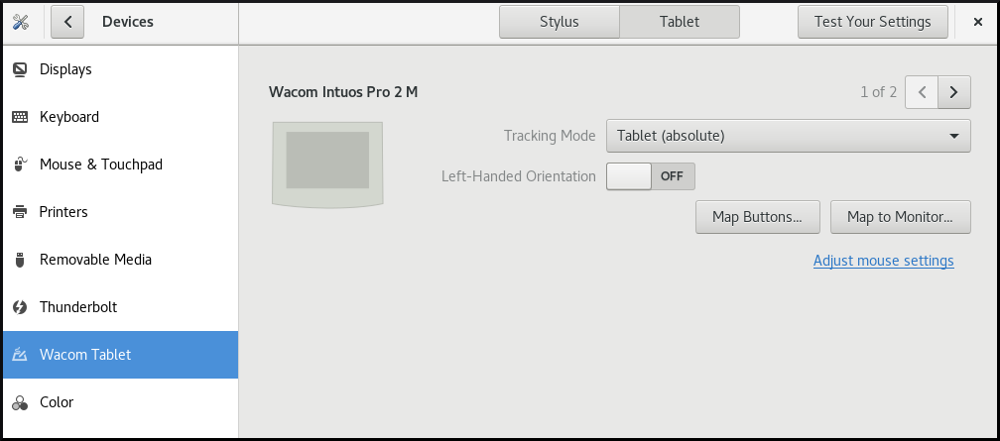
The Wacom Tablet settings panel for a grip pen
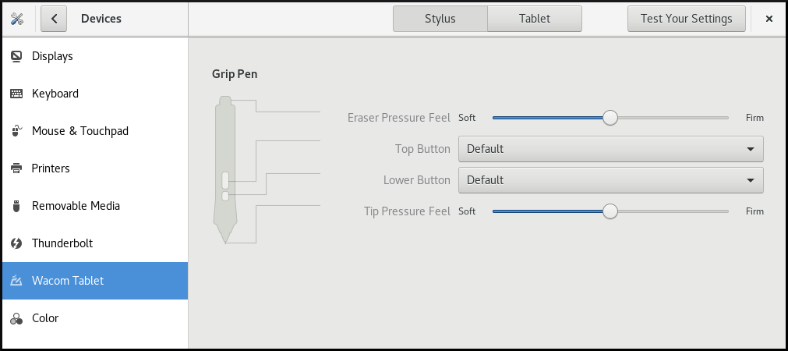
Both these tools, as well as the libinput stack, use the libwacom tablet client library, which stores the data about Wacom tablets.
If you want to add support for a new tablet into the libwacom library, you must ensure that a definition file for this new tablet exists.
12.1. Preparing a tablet definition file
The libwacom tablet client library needs a definiton file for the tablet that you want to add.
To ensure that the tablet definition file exists, follow this procedure.
Prerequisites
Make sure that your device is recognized by
libwacom:libwacom-list-local-devices
The
libwacom-list-local-devicestool lists all local devices recognized bylibwacom.If your device is not listed, the device is missing from libwacom’s database. However, the device might still be visible as an event device in the kernel under
/proc/bus/input/devices, and if you use the X.Org display server, in theX sessionon thexinputlist.
Procedure
Make sure that the
libwacom-datapackage is installed.Most tablet definition files are included in this package. If the package is installed, the tablet definition files are locally available in the
/usr/share/libwacom/directory.Check whether the definition file is available in the
/usr/share/libwacom/directory.To use the screen mapping correctly, support for your tablet must be included in the
libwacomdatabase and in the udev rules file.ImportantA common indicator that a device is not supported by
libwacomis that it works normally in a GNOME session, but the device is not correctly mapped to the screen.If the definition file for your device is not available in
/usr/share/libwacom/, you have these options:- The required definition file may already be available in the linuxwacom/libwacom upstream repository. So you can try to find the definition file there. If you find your tablet model in the list, it is sufficient to copy the file to the local machine.
You can create a new tablet definition file. Use the
data/wacom.examplefile below, and edit particular lines based on the characteristics of your device.# Example model file description for a tablet [Device] # The product is the product name announced by the kernel Product=Intuos 4 WL 6x9 # Vendor name of this tablet Vendor=Wacom # DeviceMatch includes the bus (usb, serial), the vendor ID and the actual # product ID DeviceMatch=usb:056a:00bc # Class of the tablet. Valid classes include Intuos3, Intuos4, Graphire, Bamboo, Cintiq Class=Intuos4 # Exact model of the tablet, not including the size. Model=Intuos 4 Wireless # Width in inches, as advertised by the manufacturer Width=9 # Height in inches, as advertised by the manufacturer Height=6 # Optional features that this tablet supports # Some features are dependent on the actual tool used, e.g. not all styli # have an eraser and some styli have additional custom axes (e.g. the # airbrush pen). These features describe those available on the tablet. # # Features not set in a file default to false/0 [Features] # This tablet supports styli (and erasers, if present on the actual stylus) Stylus=true # This tablet supports touch. Touch=false # This tablet has a touch ring (Intuos4 and Cintiq 24HD) Ring=true # This tablet has a second touch ring (Cintiq 24HD) Ring2=false # This tablet has a vertical/horizontal scroll strip VStrip=false HStrip=false # Number of buttons on the tablet Buttons=9 # This tablet is built-in (most serial tablets, Cintiqs) BuiltIn=false
12.2. Adding support for a new tablet
To add support for a new tablet into the libwacom tablet information client library, follow this procedure.
Prerequisites
The definition file for the tablet that you want to add exists.
For more indormation on ensuring that the definition file exists, see Section 12.1, “Preparing a tablet definition file”.
Procedure
Add and install the definition file with the
.tabletsuffix:cp the-new-file.tablet /usr/share/libwacom/
Once installed, the tablet is part of libwacom’s database. The tablet is then available through
libwacom-list-local-devices.Create a new
/etc/udev/rules/99-libwacom-override.rulesfile with the following content so that your settings are not overwritten:ACTION!="add|change", GOTO="libwacom_end" KERNEL!="event[0-9]*", GOTO="libwacom_end" [new tablet match entries go here] LABEL="libwacom_end"
- Reboot your system.
12.3. Where is the Wacom tablet configuration stored
Configuration for your Wacom tablet is stored in GSettings in the /org/gnome/settings-daemon/peripherals/wacom/machine-id-device-id key, where machine-id is a D-Bus machine ID, and device-id is a tablet device ID.
The configuration schema for the tablet is org.gnome.settings-daemon.peripherals.wacom.
Stylus configuration is stored in the /org/gnome/settings-daemon/peripherals/wacom/device-id/tool-id key, where tool-id is the identifier for the stylus used for professional ranges. For the consumer ranges with no support for tool-id, a generic identifier is used instead.
The configuration schema for the stylus is org.gnome.settings-daemon.peripherals.wacom.stylus. The configuration schema for the eraser is org.gnome.settings-daemon.peripherals.wacom.eraser.
12.4. Listing available Wacom tablet configuration paths
To get the full list of tablet configuration paths used on a particular machine, use the gsd-list-wacom tool, which is provided by the gnome-settings-daemon package.
Prerequisites
Make sure that the
gnome-settings-daemonpackage is installed on your system.# yum install gnome-settings-daemon
Procedure
To get the full list of tablet configuration paths used on your machine, run the following command:
$ /usr/libexec/gsd-list-wacom
Using machine-id, device-id, and tool-id in configuration paths allows for shared home directories with independent tablet configuration per machine. However, when sharing home directories between Machines, the Wacom settings apply only to one machine. This is because the machine-id for your Wacom tablet is included in the configuration path of the /org/gnome/settings-daemon/peripherals/wacom/machine-id-device-id GSettings key, which stores your tablet settings.
Chapter 13. Installing applications using Flatpak
13.1. The Flatpak technology
Flatpak provides sandbox environment for application building, deployment, distribution, and installation. Applications you run using Flatpak have minimum access to the host system, which protects the system installation against third-party applications. Flatpak provides application stability regardless of your Linux kernel architecture, name, version, or release. Flatpak allows you to install and run multiple versions of the same application simultaneously.
The details of the application packaged with Flatpak are stored in the flatpakref file that uses the .flatpakref extension. Each flatpakref file contains information enabling it to add the remote and install the application. You can access flatpakref files remotely in a remote repository, or you can download and manage them locally on your computer.
Flatpak can be used in combination with third party centralized repositories for applications packaged with Flatpak. Note that Red Hat supports Flatpak as a method of installing applications. Applications from third-party repositories are not supported by Red Hat.
13.2. Setting up Flatpak
Procedure:
To install Flatpak, use:
$ sudo yum install flatpak
13.3. Managing applications packaged with Flatpak in the graphical interface
The following section describes how to search for, install, launch, and update Flatpak applications in the graphical interface.
Prerequisites
- Installed Flatpak.
13.3.1. Installing Flatpak applications in the graphical interface
The following section describes hoe to search for applications packaged with Flatpak.
Procedure
- Go to the remote repository that hosts applications packaged with Flatpak.
- Download the flatpakref file for the application.
- Open the flatpakref file with the Software Installer.
- Click the button and wait for the installation process to be complete.
- Click the button to launch the application.
13.3.2. Updating Flatpak applications in the graphical interface
The following section describes how to make all applications update automatically.
Procedure
- Open the Software application.
Click the icon in the top left corner.
The pop-up menu appears.
Click on .
The pop-up menu appears.
- Enable Automatic Updates and Automatic Update Notifications.
13.4. Managing applications using Flatpak on the command-line
The following section describes how to search for, install, launch, and update Flatpak applications from the command-line.
Prerequisites
- Installed Flatpak.
13.4.1. Adding a remote repository
If the flatpakref file is not stored locally on your computer, it is necessary to enable the remote repository.
Procedure
To enable the remote repository, use:
$ flatpak remote-add --if-not-exists remote-repository path-to-the-remote-repositoryReplace remote-repository with the name of the remote repository that hosts applications packaged with Flatpak, and path-to-the-remote-repository with the path to the remote repository.
13.4.2. Searching for Flatpak applications
Prerequisites
- Enabled remote repository.
Procedure
To search for an applications, use:
$ flatpak search application-nameThe search returns the ID of the application and the remote repository that hosts the application.
13.4.3. Installing Flatpak applications
Prerequisites
- Enabled remote repository.
Procedure
To install an application, use:
$ flatpak install remote-repository application-id
Replace remote-repository with the name of the remote that hosts the application, and replace application-id with the ID of the application.
13.4.4. Launching Flatpak applications
Procedure
To launch the application, use:
$ flatpak run application-idReplace application-id with the ID of the application.
13.4.5. Updating Flatpak applications
Procedure
To update all applications installed with Flatpak, use:
$ flatpak update